Chapter 4: The Near East¶
Introduction¶
![A picture of a piece of brown stone is shown with carvings of three rows of fighting scenes. The top of the stone is broken on the left side and there is a crack running down the middle of the stone. The scenes depict images from combat – people dressed in cloths tied around their waists and elaborate headdresses using shields to protect themselves. Some are fighting with spears, swords, bows and arrows, and some are riding camels and horses with chariots. Some people are laying on the ground or falling.](img/osx-worldhist-a04-00-assyrarmy.webp)
At the dawn of the Iron Age, which began around 1200 BCE in the Near East, highly trained Assyrian armies with bronze and iron weapons expanded out of northern Mesopotamia. Within a few centuries, their conquests had provided the Assyrians with an empire larger than the Near East had ever seen. Relying on archaeological finds like this detailed relief as well as textual documentation from the Bible and other sources, historians have pieced together the history of this once-mighty state (Figure 4.1). The Assyrians conquered the kingdom of Israel in the eighth century BCE, added Egypt to their lands in the seventh century BCE, and held it all together with a combination of ruthless military tactics, efficient state organization, and a wide network of royal roads. They left a powerful regional legacy, yet theirs is just one of many empires that rose and fell in the complicated and dangerous world of the ancient Near East. Though these local power brokers were linked by the shared heritage of a Sumerian past, including influences such as cuneiform and Hammurabi’s law code, their rapid succession speaks to the level of rivalry and conflict experienced by the people of the area. Yet the same chaos led to important innovations in all aspects of society, particularly military technology.
![A timeline of the events from this chapter is shown. 1792 BCE: Code of Hammurabi written; a picture of a black stone carving with a sitting person passing something to a standing person is shown. 1650 BCE: Hittites dominate central Anatolia. 1550-1068 BCE: Egypt dominates the Near East. 1400 BCE: Earliest possible date for birth of Zoroastrianism; a picture of a stone carving of a large bird with a man’s head and its wings spread is shown. 1258 BCE: Hittites and Egyptians sign Egypto-Hittite peace treaty; a picture of pieces of a stone tablet with writing on it is shown with glass replacing the pieces that are missing. 1200 BCE: Iron Age begins in Near East. 670 BCE: Height of Neo-Assyrian Empire; a picture of a stone tablet with horses and men with weapons riding a chariot is shown. 597 BCE Babylonian exile of Judeans begins. 559 BCE: Cyrus the Great rules Persia. 550 BCE: Neo-Babylonian Empire controls much of Near East. 484 BCE: Birth of Herodotus; a white stone bust of a man with a beard and large eyes and nose is shown.](img/osx-worldhist-a04-00-timeline.webp)
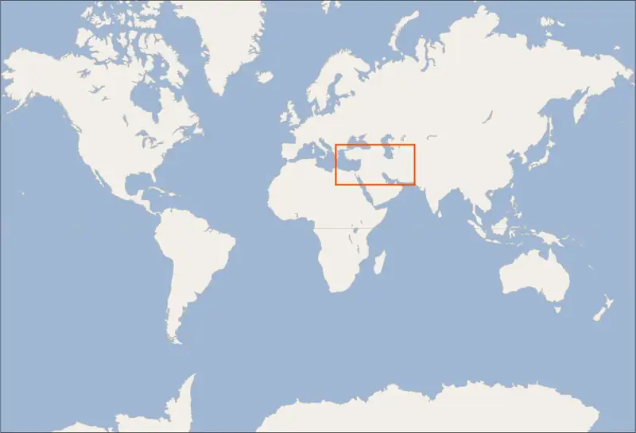
4.1 From Old Babylon to the Medes¶
Learning Objectives
By the end of this section, you will be able to:
- Describe the geography of the Ancient Near East
- Discuss the political norms, technological innovations, and unique social attributes of the major city-states of the Ancient Near East
- Explain how city-states of the Ancient Near East interacted with their neighbors
When Sargon of Akkad built Mesopotamia’s first empire in approximately 2300 BCE, he inaugurated a new era in the Near East. Though it lasted only about a century and a half, his model of imperial expansion and administration was followed by a number of successive regional powers in the region. The Third Dynasty of Ur and Hammurabi’s Babylonian kingdom were in many ways imitators of Sargon’s earlier example. Later powers like the Hittites, Neo-Assyrians, and Neo-Babylonians continued to borrow from earlier empires and added unique traits as well. Within these different empires existed a diverse assortment of peoples, social classes, religions, and daily practices. From the archaeological record and surviving documents, historians have cataloged these groups and learned a little about how they lived.
Power Politics in the Near East¶
The end of the third millennium BCE was a transformative, if sometimes chaotic, period in Mesopotamia. Foreign invaders from the north, east, and west put tremendous pressure on the rulers of the Third Dynasty of Ur, the last Sumerian dynasty. One of the greatest threats came from nomadic peoples then living in the desert regions of Syria. Raiding by these Amorites was considered such a problem that in approximately 2034 BCE, Shu-Sin, ruler of Ur, constructed a 170-mile wall from the banks of the Euphrates to the Tigris to keep them out. The strategy ultimately failed, and in the reign of Shu-Sin’s son Ibbi-Sin, the Amorites breached the wall and began attacking cities. They were soon joined by the Elamites from the east. As raids by these groups increased in volume and intensity, city after city fell, and the Third Dynasty of Ur disintegrated. By around 2004 BCE, all that remained of Ibbi-Sin’s empire was the city of Ur itself. In that year, it too was sacked by the Elamites and others.
Amorites then spread out across Mesopotamia, establishing powerful cities of their own. They adopted the region’s existing religious traditions, its local customs, and the Akkadian language. They also embraced the political culture of rivalry, and their two most prominent cities, Isin and Larsa, fought for supremacy. The drive for dominance stoked the same kinds of innovation and expansion that had characterized the first city, Ur.
The Rise of Babylon¶
During the later stages of the competition between Isin and Larsa, a new power emerged in southern Mesopotamia. This was the city of Babylon. Unlike Ur, Babylon had not previously been an important city-state. Its name is of unknown origin and was likely pronounced Babil. Akkadian speakers of the area called it Bab-ili, which meant “gateway of the gods.” In 1894 BCE, an Amorite chieftain named Sumu-adum took the city and installed himself as ruler. His successors expanded their control over the surrounding area, building public works projects and digging canals. But this expansion was modest, and by about 1800 BCE, Babylon controlled only a relatively small territory around the city itself. Indeed, at this time, it was just one of a handful of small states making up a loose coalition in Mesopotamia.
It was during the reign of Hammurabi in eighteenth century BCE that Babylon rose as a center of power and the administrative capital of a new Mesopotamian empire (Figure 4.4). Early in his reign, Hammurabi made an alliance with the powerful Assyrians to the north. This pact gave him the protection he needed to expand his kingdom, taking control of Isin, Uruk, and other key cities of southern Mesopotamia. Soon Babylon had become a major center of power in the south and the target of rival kingdoms. In approximately 1764 BCE, a coalition led by the city-states of Elam and Eshunna invaded Babylonian territory, hoping to capture Hammurabi’s powerful realm, but it failed, and Hammurabi turned his attention to the south. Eventually, he sent his armies even against his former ally, Assyria. By 1755 BCE, he had transformed the small kingdom he inherited into the center of a Mesopotamian empire to rival any that had come before it.

At its height during Hammurabi’s reign, the Babylonian Empire stretched from the upper reaches of the Euphrates River, not far from modern Aleppo in the north, to the Zagros Mountains in the east and the Persian Gulf in the south (Figure 4.5). But these extensive borders did not long survive the death of Hammurabi himself. Under the rule of his son Samsu-iluna, Babylon faced resistance from the Kassites of the Zagros Mountains and from a newly formed kingdom called Sealand in the marshy region near the Persian Gulf. The empire’s territorial control continued to decline until, by the reign of Samsu-ditana in the late sixteenth century BCE, all that remained was the small region around the city of Babylon itself. In this weakened state, Babylon was sacked by a new emerging power, the Hittites, and the dynasty of Hammurabi came to a definitive end.
![Two maps are shown. The map on the left shows the northeastern tip of Africa, the Middle East, and the southeast corner of Europe. The Black Sea, the Mediterranean Sea, the Caspian Sea, the Red Sea, the Bab el Mandab Strait, the Arabian Sea and the top of the Persian Sea are labeled. These countries are labeled: Tukey, Georgia, Armenia, Azerbaijan, Cyprus, Syria, Lebanon, Israel Iraq, Kuwait, Israel, Jordan, Saudi Arabia, Yemen, Oman, Bahrain, Qatar, Egypt, and Sudan. The capital city of each country is shown as well. A square section of this map in Iraq and the western part of Iran is highlighted with a red box and shown enlarged as a second map. The second map shows an area running from left to right on an angle that is highlighted green. The following cities, from north to south, are labeled in this green region: Mari, Eshnunna, Sippar, Babylon, Kish, Nippur, Isin, Lagash, Uruk, Larsa, Ur, and Eridu. The city of Assur in the northwest corner of the map and the city of Susa in the western area of the map are labeled outside of the green area.](img/osx-worldhist-a04-01-m-babylon.webp)
The Hittites¶
Unlike the Babylonians, the Hittites were not from Mesopotamia, nor were they members of the Semitic language group. Rather, they were an Indo-European-speaking group that emerged as a powerful force in Anatolia starting in the 1600s BCE. Their precise origins are not known, but they were likely immigrants to Anatolia who blended into the local population and adopted much of its culture and religion. By 1650 BCE, the Hittites dominated central Anatolia from their capital at Hattusas. Their expansion across Anatolia and into Syria continued into the early sixteenth century BCE under the reign of Mursilis, during which time the growing kingdom also set its sights on Babylon.
Possibly as a demonstration of military might or simply to seize an opportunity, the Hittite army descended into Mesopotamia and took the city of Babylon. Despite the success of the campaign, Mursilis’s power in Anatolia began to weaken during his absence. He was assassinated soon after he returned, and the Hittite Empire began to crumble as its subject kingdoms rebelled and it was consumed by war. By 1500 BCE, order had been restored, but the new rulers struggled to return the Hittites to their former glory.
Beginning with the rise of the Hittite king Tudhaliyas I in 1420 BCE, the Hittite Empire experienced a revival and new imperial growth (Figure 4.6). By the reign of Suppiluliumas I in the mid-fourteenth century BCE, it had become arguably the most powerful empire in the Near East and a major rival of New Kingdom Egypt. The two realms vied for control of the eastern Mediterranean in the 1300s and 1200s BCE, eventually facing off in the epic Battle of Qadesh in 1274 BCE.
![A map is shown of the Middle East and the northeast corner of Africa. The Black Sea, the Aegean Sea, the Mediterranean Sea, the Caspian Sea, the Red Sea, and the Persian Gulf (Arabian Gulf) are labeled. Most of the country of Turkey is highlighted green as well as most of Syria and Lebanon. Most of Iraq is highlighted orange and labeled “Mesopotamia.” The orange also overlaps part of the green in Syria and the southeastern edge of Turkey. The country of Israel is covered with black dots. The black dots overlap the green highlights in Syria and Lebanon as well as some of the orange in Syria and the southern portion of Turkey. The black dots are labeled “Levant.” Along the western coast of Turkey, the regions are labeled from north to south: Wilusa, Seha R. Land, and Arzawa. Along the Mediterranean coast of Turkey the regions are labeled Lukka, Tarhuntassa, and Kizzuwanda from west to east. In the middle of Turkey the regions are labeled Pitassa and Lower Land and in the east there are labels for Kaska, Land of Hatti, Upper Land and Isuwa. An island south of Turkey is labeled Alasiya. The areas where the green orange, and black dots overlap has labels for the regions of Hurrian Lands, Mitanni, Amurru, Nuhasse, Amka, and the Syrian Desert. In Saudi Arabia along the Tigris River is an area labeled Assyria. Cities labeled in Turkey from west to east include: Troy, Milawata, Hattusa, and Kanesh. In the Middle East the cities labeled include: Carchemish, Alalah, Aleppo, Ugarit, Qatna, Qadesh, Gubla, Damascus, Babylon, and Jerusalem. In Egypt the city of Cairo is labeled on the Nile River.](img/osx-worldhist-a04-01-m-hittemp.webp)
Generally accepted as a draw or possibly a narrow Hittite victory, the fighting at Qadesh is most memorable for ultimately leading the two forces to recognize that they had more to gain from peace than war. In 1258 BCE, the Hittite king Hattusilis II and the Egyptian Pharaoh Ramesses II signed one of early history’s greatest peace treaties (Figure 4.7). The agreement confirmed Hittite control of Syria and Egyptian dominance over the Phoenician ports of the eastern Mediterranean. However, little more than fifty years later, the once-powerful Hittite Empire collapsed, never to reappear.
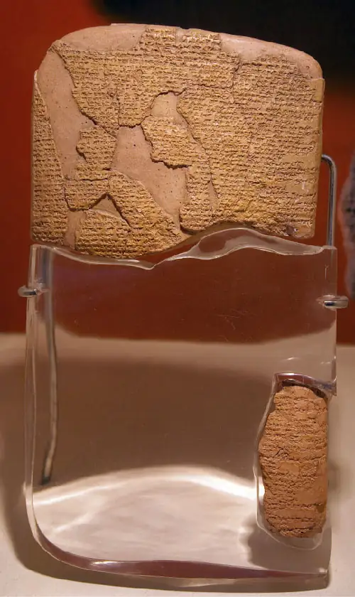
The Hittite Empire was not the only important Near Eastern power to disintegrate during this period. Across the eastern Mediterranean and Mesopotamia beginning around 1200 BCE, kingdoms and empires from Greece to Mesopotamia went into a decline so extensive it is now called the Late Bronze Age Collapse. Although its trigger remains unknown, the collapse coincided with widespread regional famine, epidemic disease, war, and waves of destructive migrations across the eastern Mediterranean. By the time calm returned around 1100 BCE, the region had entered a new era, the Iron Age. This was a period in which iron replaced bronze as the metal of choice for tools and weapons, and new and more sophisticated empires expanded across the Near East.
The Neo-Assyrian Empire¶
For a few centuries after the Late Bronze Age Collapse, Mesopotamia experienced transformations that dramatically reshaped the region and set the stage for a new imperial era. During the eleventh and tenth centuries BCE, decline came to both Assyria and especially to Babylonia, where dynasties competed for control. Complicating the situation for the Babylonians, a Semitic group of unknown origin called the Chaldeans took control of far southern Mesopotamia during this period. Assyria in the north fared a little better but also struggled to reestablish control over northern Mesopotamia. One of the major factors limiting Assyria’s ability to grow was the presence of a group of West-Semitic seminomads called Aramaeans. The Aramaeans likely emerged first in southern Syria; they exploited Assyrian and Babylonian weakness to expand into Mesopotamia, disrupting Assyrian trading routes as they went. By the tenth century BCE, they had become the dominant population in western Mesopotamia and controlled a number of powerful kingdoms there.
It was only around 900 BCE that Assyria was able to reestablish control over northern Mesopotamia. This marks the birth of what historians often refer to as the Neo-Assyrian Empire (to distinguish it from the Old Assyrian Empire of 2000–1600 BCE and the Middle Assyrian Empire of 1400–1100 BCE). Beginning in the reign of Ashurnasirpal II in the early ninth century BCE, the Neo-Assyrian Empire began a steady march toward imperial dominance across the Near East, asserting control over many Aramaean kingdoms in Syria and eventually over Babylonia itself. By the end of Tiglath-Pileser III’s reign in 727 BCE, the Neo-Assyrian Empire had become the dominant power in the Near East. Over the next several decades, successive Assyrian kings were able to build an expansive empire across Mesopotamia and the eastern Mediterranean through wars of conquest. In 671 BCE, King Esarhaddon invaded Egypt and added that center of wealth and power to his kingdom.
With this conquest, the Neo-Assyrian Empire achieved a degree of territorial control far surpassing that of any earlier empire of the region (Figure 4.8). But its supremacy was not to last. Beginning in the last decades of the seventh century BCE, two growing powers threatened and eventually overthrew Assyria. These kingdoms were Babylonia and Media.
![A map is shown. The areas shown include Europe in the northwest along with Asia Minor, Central Asia in the northeast, Persia in the east, North Africa in the southwest and the Arabian Peninsula in the south part of the map. The Black Sea, the Aegean Sea, the Mediterranean Sea, the Caspian Sea, the Red Sea, the Persian Gulf (Arabian Gulf), the Strait of Hormuz, and the Gulf of Oman are labeled. An area is highlighted orange that encompasses the eastern section of Turkey, all of Syria and Iraq, western Iran, all of Lebanon and Israel and most of Egypt. The cities labeled within that orange area include, from north to south, Tarsus, Harran, Nineveh, Assur, Kish, Byblos, Damascus, Babylon, Uruk, Ur, Jerusalem, and Memphis. The Taurus Mountains and the Zagros Mountains in the north of this orange area are labeled and the Sinai Peninsula in northeast Egypt is labeled. The Tigris and Euphrates Rivers are also labeled as is Van Golu (Lake Van), the Dead Sea, the Suez Canal, the Nile River and Lake Nasser.](img/osx-worldhist-a04-01-m-neoassy.webp)
During the period of Assyrian expansion, Babylonia had been reduced to a vassal state of the empire, meaning it was nominally independent in the running of its internal affairs but had to bow to imperial demands and provide goods and soldiers when commanded. But in 616 BCE, the Chaldean Babylonian ruler Nabopolassar attempted to take advantage of a period of Assyrian weakness by launching a bold attack against the Old Assyrian capital of Asshur. Although the attack failed, it encouraged the Median dynasty to risk its own attack into Assyria. The Median Empire, a kingdom in northwestern Iran, had only recently unified and strengthened, largely because Assyria had devastated the rival kingdoms around it, such as Elam. The attack on Assyria proved successful, and Asshur was destroyed in 614 BCE. Shortly afterward, the Babylonians and the Medes entered into an alliance to overthrow Assyria. Assyria received support from Egypt, but it was unable to prevent the Babylonian-Median alliance from overwhelming its forces and capturing its cities. In 612 BCE, the Babylonians and the Medes reduced the once-great Assyrian city of Nineveh to rubble, killing the Assyrian king in the process. The remaining Assyrian forces fled west and held out for a few more years. By 605 BCE, however, the Assyrian Empire had been defeated and its people carried off into slavery.
The victors divided the spoils. The Median Empire took the areas to the east, north, and northeast and expanded its control to central Anatolia, much of western Iran, and the southern area between the Black and Caspian Seas.
The Babylonians, often called the Neo-Babylonians to distinguish them from Hammurabi’s subjects in the Old Babylonian period, took control of the western portion of the former Neo-Assyrian Empire. This included much of Mesopotamia, Syria, and the important Phoenician ports along the Mediterranean (Figure 4.9). Under king Nebuchadnezzar II, they waged war in Syria and the eastern Mediterranean to weaken Egypt’s power. Then, in 601 BCE, Nebuchadnezzar attempted a bold invasion of Egypt itself, only to be repulsed by strong resistance.
![A map of the Middle East is shown with southwest Europe in the top left corner and northeast Africa at the bottom left. The Black Sea and the Caspian Sea are shown in the north, the Aegean Sea and the Mediterranean Sea are shown in the west, and the Red Sea, the Persian Gulf (Arabian Sea), the Strait of Hormuz, and the Gulf of Oman are shown in the south. An upside down “U” shape is highlighted green from the west coast of Arabia up through Israel, Lebanon, Syria and into the southeast corner of Turkey and then back down through Iraq ending at the Persian Gulf. The cities of Jerusalem, Damascus, and Babylon are labeled within the green area. Memphis is labeled in Egypt. The Caucasus Mountains are labeled to the west of the Caspian Sea and the Taurus and the Zagros Mountains are labeled in Turkey and Iran, respectively.](img/osx-worldhist-a04-01-m-neobabem.webp)
Foreign Affairs and Trade¶
The many city-states, kingdoms, and empires of Mesopotamia operated in a complex world in which both risks and rewards for rulers were extremely high. War was especially common, and diplomatic mistakes could have costly consequences. Kings preferred to avoid war if possible and maintain healthy diplomatic relationships with others instead. A smaller kingdom, for example, might find it advantageous to seek an alliance with a large regional power like Assyria, Babylonia, or the Hittite Empire. Sending sons and daughters to rival kingdoms in marriage also helped forestall war and build cultural and familial bridges between competitors. The Hittite king Suppiluliumas attempted to marry one of his sons into the Egyptian royal family, which would have united these two regional powers and competitors. That marriage never took place, but many others did.
Ambassadors were a key part of Mesopotamia’s complex diplomatic world. Kings frequently sent their representatives to friendly and even rival kingdoms to mend or strengthen relationships, a vital task frequently performed under extreme pressure. A wrong move could start a war. As they are today, however, such emissaries were guaranteed certain protections. In ordinary situations, they could expect to be free to leave unharmed when the situation demanded it, to be exempt from certain taxes, and to have their property respected. But if war broke out between the two kingdoms, an ambassador could get caught in the middle.
Gift giving was an important part of the ambassadors’ role. When sent to another kingdom, emissaries frequently carried with them an offering of high value for the king who received them, and on their return home, their king expected a present of equal or greater worth. This exchange of gifts demonstrated respect and goodwill between the rulers. Returning empty-handed suggested the foreign king was breaking off diplomatic relations or had even become hostile. Occasionally an ambassador might be unable to return home, either because the relationship between the two kingdoms had gone sour or because the foreign king refused to supply an appropriate gift.
Rulers did not rely only on ambassadors for collecting intelligence in Ancient Mesopotamia. They often employed spies to inform them of what was happening inside both rival and friendly foreign kingdoms. These could be merchants, sailors, artisans, or refugees fleeing foreign lands. Hammurabi, for example, made frequent use of espionage. Not only did he recruit agents of all types to keep tabs on other kings, but he even established a special intelligence bureau in the palace at Mari to collect, translate, and analyze documents provided by his many spies. The most common uses of this intelligence were to anticipate war, learn about troop movements, and assess the strength of a foreign kingdom before putting an army into the field. Using spies was risky, however, because the very nature of the work suggested that such agents were never to be trusted, and betrayal was always a possibility. An even greater risk was borne by the spies themselves, who could expect a painful death if caught.
Long-distance trade was another important point of contact between different kingdoms around the region. Archaeological work has unearthed a wealth of information about the trading networks that crisscrossed the Near East and beyond. As early as the empire of Sargon of Akkad, Mesopotamian traders operating in the Persian Gulf sailed as far as modern-day Pakistan to trade with the people of the Indus River valley. Large empires had an interest in encouraging trade and maintained roads and bridges across the Near East for that purpose. The Assyrians were productive builders of roads and bridges that carried people and goods into and across their territory. Roads in the enormous Neo-Assyrian Empire were managed by a central government authority to ensure that the movement of goods and especially of soldiers proceeded unhindered.
By today’s standards, the long-distance roads that crisscrossed this landscape were often of poor quality. They were generally unpaved and were maintained by local authorities, who would frequently carve a new road alongside the old one after years of wear. In the desert regions where soil was firm, the roads might be straight, while in more diverse terrain, they might wind around mountains and other imposing obstacles like swamps. Traveling between cities on such roads could take several weeks, even over relatively short distances. Traders could expect some form of protection from local rulers, however, in exchange for paying custom fees and duties.
Access to foreign goods and raw materials was a major concern of empires in the Near East. In Mesopotamia in particular, vital resources like stone, timber, and metal ores were scarce, and they had to be procured in large quantities from distant locations. The flow of these goods into imperial centers often took the form of tribute payments, much like a tax, from vassal or subjugated kingdoms (Figure 4.10). However, tribute was not the only mechanism for international trade. During the Old Assyrian period (c. 2000–1600 BCE), for example, Assyrian traders traveled between Mesopotamia, Anatolia, and even Afghanistan trading in valuable goods like copper, tin, and textiles. Copper and tin were especially important because they are the ingredients needed to make bronze, the primary material for manufacturing metal tools and weapons in this period. The Assyrians even established merchant colonies in Anatolia where they exchanged tin and textiles for silver and gold.
![A picture of a brown stained, scratched, and cracked stone is shown. There are two rows of scenes shown. The top row is cut off partially from view, but feet can be seen as well as the bottoms of robes. A person kneeling low to the ground with his head resting on his hands is shown among the feet. In the second row there are five people standing, three facing to the right and two facing to the left. They wear long robes and each carry some type of object. A person is seen in between the two groups kneeling and lowering their head to the ground. Above the kneeling person is a bird shown with spread wings. In between the two rows are symbols etched into the stone.](img/osx-worldhist-a04-01-tribute.webp)
Link to Learning
Explore this website, created by the British Museum, about trade and contraband in Ancient Assyria.
Daily Life and the Family in the Near East¶
The ability to purchase luxury trade items was the privilege of the elites, who were also treated differently under the law. Hammurabi’s Code, the list of judicial decisions issued by Hammurabi and inscribed on stone pillars erected throughout his kingdom, identified three social classes during the Old Babylonian period: nobles (awelum), commoners (mushkenum), and the enslaved (wardum). These classes were not fixed but were important for understanding how individuals were treated under the law. For example, if a commoner put out the eye or broke the bone of a noble, the noble was empowered to do the same to the offending commoner. However, a noble who injured a commoner could expect to merely pay a fine.
Social distinctions also applied in the treatment of women under the law. For example, if a husband divorced his wife because she had not given birth to sons, he was required to return her dowry and pay her a sum equal to the bride price paid upon marriage. If no bride price had been paid and the husband was a noble, he was required to pay his wife one mina of silver, the equivalent of about a year’s wage for an average worker. However, if he were a commoner, he was expected to pay only one-third of a mina of silver.
The homes of Babylonians in this period reflected these social distinctions. Commoners’ dwellings were typically windowless and made of mud with thick walls that protected the occupants from the oppressive summer heat. Some were of baked brick with a type of plaster along the walls to keep out moisture and preserve the brick. They were very simply furnished and usually contained a set of interior stairs leading to the roof, where occupants could dry vegetables or perform religious rituals. The homes of the wealthy, by contrast, were larger structures built around a central courtyard and included several rooms for different purposes, such as kitchens, bathrooms, reception rooms, and storage rooms. They contained various types of wooden furniture, and walls were decorated with paintings of animals or even insects. Enslaved people commonly lived within the home, especially women and girls who worked as servants.
All Babylonians were expected to serve the gods, who were regarded as an aristocracy of powerful lords ruling over all. These deities tended to take human forms and express human emotions and desires such as love, hate, and envy. By the time of Hammurabi, the large pantheon included gods of Sumerian origin as well as gods introduced by other groups that had influenced Mesopotamian religious practices, such as the Akkadians and the Amorites. During Hammurabi’s dynasty, the storm god Marduk was elevated to the highest tier of the pantheon and accepted as the patron god of Babylonia. Other powerful deities included Ea (Enki) (Figure 4.11), the god of fresh waters; Sin (Nanna), the god of the moon; and Shamash (Utu), the god of the sun and justice. Each city had its own patron god and corresponding temple. Individuals worshipped their city’s patron god but also believed they had their own personal deity who offered protection in exchange for daily worship and service.
![A picture of a brown stone carving is shown. In the carving a man is shown facing left with his right foot up on a scalloped, square image with his left foot on the ground. He wears a pointed hat on his head with three projections sticking out on each side, he has a long beard, and wears long striped robes. He is holding his arm out and a large bird is shown sitting on his hand. He has two squiggly lines coming out of each of his shoulders heading toward the ground in an arc with fish shown inside the lines facing up. A horned animal sits below his right leg.](img/osx-worldhist-a04-01-godea.webp)
The temples dedicated to the gods supported complex administrations consisting of singers, scribes, diviners, snake charmers, stone carvers, guards, exorcists, and male and female priests. Temple rituals included the carefully choreographed serving of meals for the gods accompanied by music, during which the gods were believed to consume the essence of the food provided. (Afterward, the actual food was consumed by the temple staff and the king.) The temple staff also participated in elaborate religious festivals performed in the cities, such as the New Year Festival. During these events, the divine images of the gods were carried from the temples and throughout the town in a grand procession where everyone might catch a glimpse of the deity.
Since Assyria was also part of the larger Mesopotamian world, there were many social and cultural similarities between the Babylonians and the Assyrians. The Assyrian population was made up of four hierarchically organized classes: the nobility, the professional class, the peasantry, and the enslaved. The nobility occupied the highest position and controlled large estates. Members of this class could expect to receive a thorough education in preparation for serving in elite positions within the empire, such as military officers, governors, and high-ranking priests. Priests were important not only as interpreters of divine will but also as points of connection between the center of political power and the rest of the empire.
The large professional class included a host of skilled groups, from bankers and physicians to scribes and merchants. Each group maintained its own guild, which enforced high professional standards and saw to it that proper taxes were paid. The largest class, and the least well documented, was the peasantry. Most in this group were almost certainly poor farmers who worked the lands of the higher classes. At the very bottom of the social order were the enslaved, the majority of whom had been captured during war. They often worked the most dangerous jobs and had almost no rights. Those enslaved not by war but by unpaid debt had a somewhat higher status and could own property, conduct business, and even buy their way out of slavery in rare instances.
Above all these classes was the household of the Assyrian king. The kings of Assyria were considered viceroys of the gods, especially the chief deity Asshur. They were expected to emulate the gods through their own virtuous behavior and to act in accordance with divine omens interpreted by religious advisers. In acting on the omens, the ruler was fulfilling the dual role of defender of order against chaos and representative of humanity’s interests. When times were difficult and the gods displeased, the king might be expected to subject himself to penalties in order to calm the heavenly ire. For example, during the annual New Year Festival, the king underwent a form of ritual humiliation intended to satisfy the gods and protect his people from harm. In extreme situations, he might even need to symbolically die in order to appease the gods. In these instances, the king would step back and allow a substitute king to rule in his place for a period of weeks or months. Once that time was over, the substitute king was killed and the actual king returned to power.
The constant wars of conquest undertaken during the Neo-Assyrian Empire necessitated a highly skilled and well-organized standing army. This army included charioteers, cavalry, archers, and wielders of slings and spears (Figure 4.12). All Assyrian men were expected to serve some period of military service. The king was the official head of the army, and his chief officials were high-ranking military officers. The Neo-Assyrian Empire was effectively a military state, and it was demonstrably efficient at expanding its territory and keeping its vassals in line.
![A picture of three rectangular beige stones is shown sitting on a platform with an orange wall in the background. Two figures are in the first stone and one figure is in each of the next two stones. The figures all have long beards, wear rounded, pointed helmets, have sashes across their chests, cloths around their waists, carry bows and arrows, and are facing to the right. Each of the figures hold a severed head with long hair and a long beard in their left hand and bows in their rights. Along the ground lay headless bodies.](img/osx-worldhist-a04-01-assyrarmy.webp)
Those who defied the Assyrian war machine could expect swift and devastating consequences, including public torture and mutilation to demonstrate the price of rebellion (a response scholars have called “calculated frightfulness”). Another tactic to shut down regular or particularly difficult rebellions was the forced deportation of entire populations to other parts of the empire. The elite and skilled in a city were compelled to move to a previously depopulated region, there to be steadily assimilated into the surrounding culture until they became culturally indistinguishable from other Assyrians.
Beyond the Book: The Neo-Assyrian War Machine
Inscriptions, art, and even the Bible attest that the Neo-Assyrian military at its height was the most modern and efficient in the ancient world. Unlike other armies whose farmer-soldiers could fight only in summer, the Neo-Assyrians were a highly trained professional standing army of both male citizens and subject peoples. Training and the ability to fight year-round gave a considerable advantage and transformed the waging of war in the Near East.
Specialized groups worked together in battle. A standard Neo-Assyrian infantry team included spear fighters as well as archers and slingers who provided cover in battle (Figure 4.13).
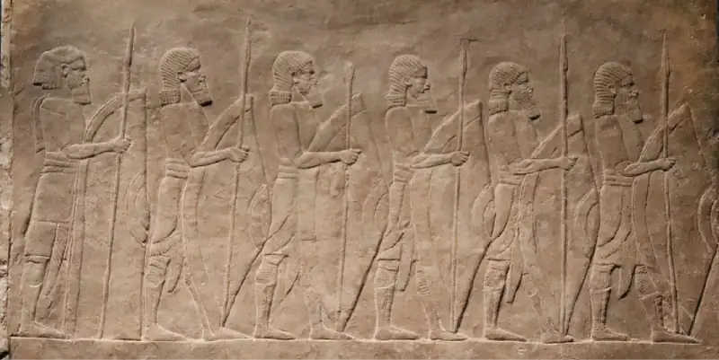
The archers used composite bows, a design capable of firing accurately at a range of four hundred feet (Figure 4.14).
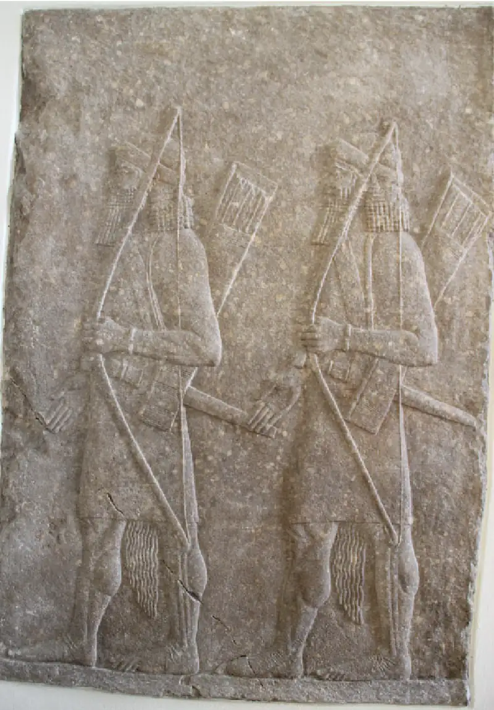
Four-wheeled chariots had featured in Mesopotamian warfare since at least 3000 BCE, but the two-wheeled, horse-drawn chariot that appeared around 2000 BCE proved far superior (Figure 4.15). Neo-Assyrian fighters often assembled in squadrons of fifty chariots, each with a driver and an archer carrying swords and clubs for close combat.
![A picture of a gray stone carving is shown with a crack running down the middle and a piece missing from the top right. The scene depicts two figures in the back of a standing chariot being pulled by two horses chasing a lion. The two figures wear long headdresses, have long beards, and have cloths around their waists. The figure in the back holds the reins of the chariot while the figure in the forefront aims a bow and arrow to the right. A spear sticks out the back of the chariot. The two horses pulling the chariot have elaborate décor on their heads and their front legs are in the air. The muscular lion is facing backward toward the horse and chariot and baring its teeth. Arrows stick out its head and shoulders.](img/osx-worldhist-a04-01-assyrchar.webp)
Though mighty, the Neo-Assyrians tried to avoid warfare, usually by demanding a besieged city surrender without a fight. But if forced, they used “calculated frightfulness” to demonstrate the price of resistance, inflicting various forms of torture on the conquered peoples (Figure 4.16).
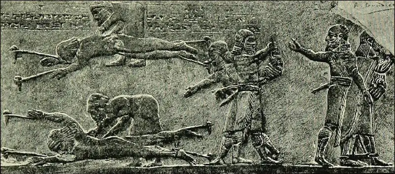
- Why might some rulers have resisted Neo-Assyrian control despite knowing the cost?
- What set the military of the Neo-Assyrians apart from their rivals? How did their use of technology increase the severity and frequency of warfare in the Near East?
Hittite society differed dramatically from that of the Assyrians and Babylonians. The entire empire included only a few large cities, like Hattusas, and most people lived in small rural villages or towns. With the exception of some leased acreage, village land was mostly held in common and worked by the people. Early in Hittite history, enslaved people had been relatively rare, but they became more numerous later on as the number of war captives rose. The Hittites practiced chattel slavery, meaning enslaved people were considered property and could be sold at will. They were frequently put to work in agricultural settings to free Hittite citizens for military service.
The religion of the Hittites incorporated elements from a number of different religious traditions, including that of Mesopotamia. Divination rituals, for example, were essentially Mesopotamian in origin and included studying the organs of sacrificed animals, consulting female soothsayers, and observing the movement of birds. Among the most important gods were the sun goddess Arinna and her consort the weather god Tarhunna (Figure 4.17). The former oversaw the government of the king and queen, the latter the rains and war. The king was the high priest and was responsible for performing specific rites at major religious festivals, such as the New Year Festival when gods laid out the course of events for the coming year. The people were expected to do their part by performing religious rites at cult centers, such as giving sacrificed animals and food and drink to the gods.
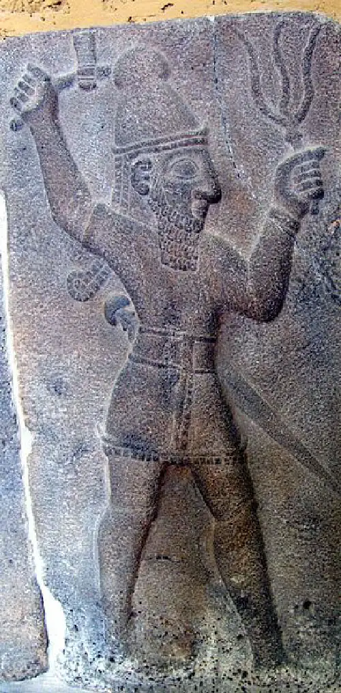
4.2 Egypt’s New Kingdom¶
Learning Objectives
By the end of this section, you will be able to:
- Explain the causes and consequences of the Hyksos invasion
- Analyze the successes and failures of key New Kingdom pharaohs
- Discuss Egypt’s interaction with its neighbors via immigration and trade
- Identify the political and religious innovations of Egypt’s New Kingdom
During the New Kingdom period, Egyptian pharaohs reunited Upper and Lower Egypt following two centuries of foreign rule. They also ended the isolation that had been typical of the Old and Middle Kingdoms and embarked on expansionist conquests. The New Kingdom pharaohs were among the greatest warriors and builders in Egyptian history. As a result of their conquests, trade flourished with the Near East and other areas, and significant advances took place in the arts.
The Hyksos in Egypt¶
As centralized power in Egypt declined during the late Middle Kingdom, Egyptians were less able to enforce their borders and preserve their state’s integrity. The result was that Semitic-speaking immigrants from Canaan flowed into the Nile delta. It is not entirely clear to historians what prompted these Hyksos to leave Canaan, but some suspect they were driven into Egypt by foreign invasion of their land. Others suggest the early Hyksos may have been traders who settled in Egypt and later brought their extended families and others. However it happened, by about 1720 BCE, they were so numerous in Lower Egypt that some of their chieftains began to assert control over many local areas. This transformation coincided with the onset of the Second Intermediate Period (c. 1720–1540 BCE) and the general collapse of centralized Egyptian rule.
Over the next several decades, many more Canaanite migrants made their way across the Sinai and into Lower Egypt. During this period, several Egyptian princes held onto power despite the changes occurring around them. Then, around 1650 BCE, one group of recently arrived Canaanites challenged the remaining princes, overthrew them, and assumed control of the entire delta, inaugurating an important new period in Egyptian history.
These Canaanites are often referred to as the Hyksos. While that name is a much later Greek corruption of the Egyptian hekau khasut, meaning “chieftains of foreign lands,” it has stuck. The Hyksos ruled the delta for more than a century, from approximately 1650 to 1540 BCE. After they had been defeated, Egyptian tradition described their rule as one of wanton destruction, including the enslavement of Egyptians, the burning of cities, and the desecration of shrines. However, these descriptions are almost certainly rooted more in later New Kingdom propaganda than in reality. Like many others who came to Egypt, the Hyksos readily adopted Egyptian culture, art, language, writing, and religion. They established their own dynasty but relied on Egyptian patterns of rule and even included Egyptians in their bureaucracies.
Hyksos rule appears to have benefited Egypt in a number of ways. It was likely the Hyksos who brought sophisticated bronze-making technology into Egypt from Canaan, for example. The advantages of bronze over softer materials like copper were obvious to Egyptians, and the metal soon became the material of choice for weapons, armor, and other tools where hardness was desired. The Hyksos also introduced composite-bow technology (which made archery faster and more accurate), new types of protective armor, and most importantly, the horse-drawn, lighter-weight chariot with spoked wheels. They may have brought the horse itself to Egypt in this period, but we do not know for sure. The chariot, however, was an especially important arrival. By the 1500s BCE, horse-drawn chariots with riders armed with powerful and highly accurate composite bows had become a staple of Egyptian militaries, just as they were across all the powerful empires and kingdoms of the Near East.
During this Second Intermediate Period, the once-vast domains of Middle Kingdom Egypt were effectively divided into three parts: the Hyksos kingdom in Lower Egypt (nearest the Mediterranean), the kingdom of Kush far upriver beyond the first cataract (an area of shallow rapids), and the Theban kingdom of Upper Egypt (Figure 4.18). Occupying all of Lower Egypt, the Hyksos kingdom had access to Canaan and by extension to the rest of the Near East. Inscriptions and archaeological evidence attest to a considerable flow of trade between Lower Egypt and the Canaanites in Palestine and Syria, though the extent of the Hyksos’ political power beyond Egypt was likely limited to a few city-states in Palestine, if that.
![Two maps are shown. The map on the right shows the Middle East, southeast Europe, southwest Asia, and northeast Africa along with the Black Sea, the east corner of the Mediterranean Sea, the Red Sea, the Caspian Sea, the Persian Gulf (Arabian Gulf), the Gulf of Oman, the Gulf of Aden, and the Arabian Sea. The countries within these areas are labeled as well as the capital of each country. A rectangular area in northeast Egypt including the Red Sea and northwest Saudi Arabia, Jordan, Israel, and part of Iraq and Syria is shown with a red border and enlarged in the second map on the left. This map shows a circular area in northeast Egypt, western Jordan, and Western Saudi Arabia highlighted in green and labeled “Hyksos Kingdom.” Within this area the cities of Avaris, Memphis, Ity-Tawy, Abydos, Huw, Thebes and Edfa are labeled along the Nile River. A small circular area in the lower portion of the green circle is colored pink and labeled “Theban Kingdom.” The cities of Huw, Thebes, and Edfa are located in this dotted area. South of the green area is a circular area highlighted orange and labeled “Kingdom of Kush.” Within this area are the cities of Buhen and Kerma. Along the Nile River there are labels with 1° Cataract, 2° Cataract, 3° Cataract, 4° Cataract, and 5° Cataract starting south of the city of Elefantina and ending far south of the city of Kerma. The city of Elefantina is labeled in between the green and orange areas on the Nile River.](img/osx-worldhist-a04-02-m-egypthyk.webp)
In the Theban kingdom, centered on the city of Thebes, indigenous Egyptian rulers still held sway. It is possible that in the early years of their rule in Lower Egypt, the Hyksos were able to exert some indirect control over Thebes, but distance made direct rule nearly impossible. Still, the connections between the two kingdoms continued, perhaps with some intermarrying.
The Theban kings resisted Hyksos control of Lower Egypt. However, an alliance between the Hyksos and the kingdom of Kush in the far south made any effort to oust the Hyksos extremely risky. It was only beginning in the 1550s BCE that a string of Theban Egyptian rulers were able to go on the offensive against the Hyksos. After multiple failed attempts, these rulers eventually succeeded in capturing large portions of Hyksos territory and bringing the fight to the edges of Avaris, the capital of Hyksos Egypt. By approximately 1540 BCE, Pharaoh Ahmose I had broken the defenses around Avaris, destroyed the Hyksos kingdom, and reasserted Egyptian power in Lower Egypt (Figure 4.19). He then turned his attention south to Kush and east to Palestine, extending Egyptian control over these regions as well. His reign ushered in a new period of Egyptian greatness called the New Kingdom.
![A gold image on a black background is shown. In the image, a figure on the left is standing with legs spread wearing a decorative headdress with a projection coming out of the front. He wears a cloth around his waist, bracelets and decorative arm and neck bands. His left hand is fisted and placed atop another figure that is almost kneeling on one knee facing him. The standing figure’s other hand is clasping the elbow of the kneeling figure. The partially kneeling figure is wearing a simple round headdress and a cloth around his waist as well as arm, neck, and wrist bands.](img/osx-worldhist-a04-02-ahmosei.webp)
The Pharaohs of the New Kingdom¶
The New Kingdom period (c. 1550–1069 BCE) represents the pinnacle of Egyptian power and influence in the Near East. During this time, Egypt not only reconquered the territory it had lost following the collapse of the Middle Kingdom, but it also extended its reach deep into the Libyan Desert, far south into Nubia, and eventually east as far as northern Syria. This expansion made Egypt the Mediterranean superpower of its day. So it is not surprising that the pharaohs of this period are some of the best known. They include the conqueror Amenhotep I, the indomitable Queen Hatshepsut, “the magnificent” Amenhotep III, the transformative Akhenaten, and the highly celebrated Ramesses II, also known as Ramesses the Great. Many came to power at a young age and ruled for an extended period of time that allowed for many accomplishments. They also commanded massive and highly trained armies and had at their disposal a seemingly endless supply of wealth, with which they constructed some of the most impressive architectural treasures of the entire Near East.
The New Kingdom began with the reign of Ahmose, the pharaoh who recovered not only Lower Egypt but also Nubia and Palestine. When he died in 1525 BCE, his oldest surviving son, Amenhotep I, assumed control. Amenhotep then married one of his sisters, Meritamun, as was common in this period and as the gods of Egyptian myth were believed to have done.
The rise of the early New Kingdom pharaohs coincided with the elevation of a previously minor deity, the Thebans’ patron god Amun. Respect for him merged with regard for Re, the patron of the monarchy, and he became known as Amun-Re. Amenhotep I and his successors built temples and other major public works in his honor, particularly the great Temple of Amun at Karnak. Thebes also had special importance for the New Kingdom pharaohs as the state’s religious capital and the favored royal burial place, commonly called the Valley of the Kings.
Dying without an heir, Amenhotep I was succeeded by Thutmose I, a general who may have been a distant relative. Thutmose I and his son Thutmose II both campaigned in Nubia and Syria. The father marched his armies all the way to the Euphrates River in Syria, likely as a show of force against emerging powers in the region. The son married his sister Hatshepsut, who gave birth to a daughter but not a son. So when Thutmose II died in 1479 BCE, his two-year-old son conceived by a concubine assumed the throne as Thutmose III.
Acting as regent for the infant pharaoh, Hatshepsut inaugurated a very unusual period in Egyptian history. Rather than merely rule in the background as a typical regent would, she proclaimed herself co-regent with her stepson and soon assumed the title of pharaoh. Statues of her from this period depict her wearing the pharaonic headdress and ceremonial beard and give her the broad torso more typical of a male (Figure 4.20). Such masculine features were not an attempt to obscure her femininity but rather a recognition that all the symbolic representations of Egyptian pharaohs were male. Inscriptions clearly indicated that she was a woman. She was called the “Daughter of Re,” and feminine word endings appear in some inscriptions, such as “His Majesty, Herself.”
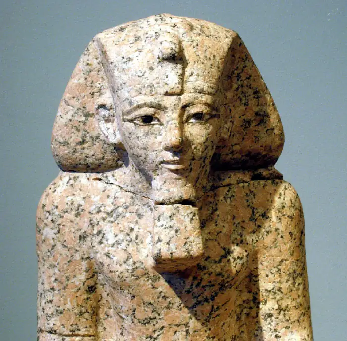
As Egyptian pharaohs had done for many centuries, Hatshepsut also claimed divinity. While the reasons for this long-standing belief remain unclear and may never be fully understood, this is one of the features of Egyptian culture that made it very different from that of Mesopotamian contemporaries, who usually held kings to be only viceroys of the gods, not gods themselves. Unlike earlier pharaonic claims of divinity, however, Hatshepsut’s included a detailed account of her heavenly origins in the form of a poem she had inscribed on the walls of her mortuary temple for all to see. In the poem, Amun-Re himself assumes the form of Thutmose I and, after conceiving Hatshepsut with her mother, predicts that his child will rule all Egypt and elevate it to unsurpassed glory. The poem then describes how a council of Egyptian gods proclaimed Hatshepsut’s earthly authority, and how Thutmose I recognized her divinity and named her his rightful successor.
As both a woman and a regent, Hatshepsut was prudent to thus legitimate her rule. And by all accounts, the heavenly prophecies about her reign proved accurate. For twenty-one years she ruled over a prosperous and dominant Egypt, even conducting military campaigns into Nubia and possibly southern Palestine. At one point, she sent a large fleet south into a mysterious land the Egyptians called Punt, likely coastal East Africa near modern Somalia, where her ships collected and brought back a cargo of exotic plants, animals, precious metals, and spices.
Construction of Hatshepsut’s three-tiered mortuary temple began shortly after she took the throne and likely lasted many years. The temple was built into the side of a cliff and included a series of ramps that took visitors through garden courtyards, past large obelisks and statues, and toward a shrine to Amun at the top (Figure 4.21). In the years after her death, elaborate rituals including libations, food offerings to the gods, purification rituals, recitations, and singing were performed by the priests who managed the enormous complex.
![A photograph of a sand colored building is shown in front of a large sandy cliff. A long bricked walkway is shown in front of a striped ramp that leads to the roof of the first tier of the building which then leads to another ramp to the second tier. The three floors of the building show large, plain, rectangular openings. The background of the building is large, tall cliffs that are the same color as the building. A large, sandy colored statue of an animal lying with its paws in front is shown to the right of the walkway. The forefront shows a sandy and rocky landscape.](img/osx-worldhist-a04-02-hatshtomb.webp)
When Hatshepsut died in 1458 BCE, her stepson Thutmose III took control as sole ruler in Egypt for the first time. He was about thirty years old by then and had extensive military training. This preparation served him well, for soon he faced a Hittite and northern Mesopotamian threat to Egypt’s control in Syria and Palestine. Leading his armies himself, he was able to neutralize the threats, launch a major raid across the Euphrates River, and take numerous Canaanite princes hostage so as to deter any uprisings from his vassals.
It was only late in his reign that Thutmose III began to eliminate his predecessor from history. He had Hatshepsut’s statues toppled and smashed, her name removed from monuments, and references to her scrubbed from the official king lists. The evidence suggests that he harbored no ill will toward his stepmother. Instead, her erasure from the record was probably part of Thutmose’s process of paving the way for his son to rule in his own right in the future, without a dominant female like his stepmother to assert control.
Amenhotep II, son of Thutmose III, continued the successful military campaigns against both Hittite and Mesopotamian threats to Egyptian influence in Palestine and Syria. His rule was followed by the short reign of Thutmose IV, likely a younger son, and the long and especially prosperous rule of Amenhotep III, known as “the Magnificent.”
Amenhotep III’s nearly forty-year reign in the fourteenth century BCE was a time of extended peace during which numerous monuments to Egyptian greatness were constructed. These included the sumptuous palace at Thebes, the Serapeum—a temple of the god Serapis—at Saqqara, many temples for other gods, Amenhotep’s own large mortuary temple, and a great many statues of himself. His reign was also marked by an increased emphasis on the Egyptian sun god Aton, one of many manifestations of Re. Amenhotep’s palace at Thebes and the large royal barge upon which he and his queen glided along the Nile for important religious events were named for Aton. Toward the end of Amenhotep III’s reign, he officially proclaimed himself the personification of Aton, and his servants greeted him as such.
Under Amenhotep III’s heir Amenhotep IV, the emphasis on Aton reached its fullest extent. Amenhotep IV built a new city downriver from Thebes that he called Amarna, “the place where the solar orb is transformed.” It was also known as Akhetaton. The following year, he changed his own name to Akhenaten, meaning “the transfigured spirit of the solar orb,” and moved himself and his entire family to the new city. Akhenaten later closed the temples of the other major Egyptian gods and ordered representations of them destroyed and their names chiseled off monuments. The pharaoh and his wife Queen Nefertiti now became the chief priests of a new cult built around Aton (Figure 4.22).
![A picture of a colorful bust is shown on a brown background. The bust shows a woman wearing a tall, oval, blue headdress with a gold strip in front and an orange, gold, green and blue decorated stripe running all around the headdress across the middle and behind her right ear. There is a cross-like gold object at the front of the headdress. Her skin is caramel and one eye is black while the other eye is white without a pupil. She has dark eyebrows and maroon full lips. Her right ear is broken off at the top and white shows underneath. She wears a highly colorful necklace in the same colors as her headdress in various shapes and rows. The bottom edges of the bust are chipped and worn.](img/osx-worldhist-a04-02-nefertiti.webp)
In the emerging new religion, people were instructed to worship the pharaoh. This made Akhenaten and Nefertiti intermediaries between the people and their god, eliminating the need for powerful priests like those of Amun (Figure 4.23). Many theories have been proposed to explain Akhenaten’s motive for founding a new monotheistic religion, including sincere belief, but most have been discarded. It is possible he was merely attempting to revert to an older model of religious practice in which the king was the primary state deity.
![A picture of a brown stone carving is shown with a broken corner at the top left. The carving shows an orb in the middle at the top with rays coming out and symbols at the end of the rays. Hieroglyphics are carved across the top of the stone and below the rays from the orb as well as along the right side of the carving. On the left side of the carving a man sits on a padded stool with his bare feet on a padded footrest. He wears a tall detailed headdress and has a cloth around his waist. He holds a small person in his arms and is kissing them. In the right half of the carving a woman is seated on a padded stool with her bare feet on a smaller padded footrest. She wears a decorated headdress and long cloths on her body. She holds a small person on her lap and another is on her shoulder. Obscure designs run along the bottom left of the stone and the edges of the carving have decorative lines all around.](img/osx-worldhist-a04-02-aten.webp)
Dueling Voices: The Many Strange Faces of Akhenaten
Mystery and debate have surrounded the pharaoh Akhenaten ever since archaeologists first uncovered the lost city of Akhetaton in the 1880s. He has been called a heretic, a revolutionary, a lunatic, and more. Some of the fascination comes from the theory that he gave birth to modern monotheism. Others have seen in him a way to reject monotheism entirely.
In 1910, the British Egyptologist Arthur Weigall published a biography called The Life and Times of Akhnaton in which he argued that the Egyptian pharaoh had experienced a “pre-Christian revelation.” The book was a bestseller in Europe, drawing Christian readers eager to learn about a possible connection between their religion and Ancient Egypt.
In 1939, Sigmund Freud, the founder of psychoanalysis, developed his own interpretation of Akhenaten’s significance in his biography of Moses, Moses and Monotheism, arguing that Moses was in fact a priest of Akhenaten’s new religion. When Akhenaten died and his religion was washed away, Moses was forced to flee Egypt. His religious ideas, according to Freud, passed to the people of Canaan and led to the monotheistic religion of Judaism.
In the 1930s and 1940s, some followers of the Nazi movement in Germany became fascinated with the life of Akhenaten. Eager to reject Christianity because of its connections of Judaism, they supported a revival of pre-Christian paganism rooted in nature worship, which they felt was more authentically German. Reading about Akhenaten and seeing his artifacts on display in the Berlin Museum, they could not help but see similarities between his religion and the pagan sun-worshipping religion they were trying to advance in Germany. Their ideas led to a number of books, like Savitri Devi’s 1939 A Perfect Man: Akhnaton, King of Egypt and Josef Magnus Wehner’s 1944 novel Akhenaten and Nefertiti: A Tale from Ancient Egypt.
Devi actually wrote several books about Akhenaten and his religion. Few today find her analysis worth considering, but they are a reminder of the way Akhenaten’s religious movement has fascinated and influenced people thousands of years after his death.
- Try developing your own interpretation of Akhenaten’s religious motivation. Consider what you learned about the actual Akhenaten as well as any other elements you want to imagine.
- Why do you think early twentieth-century writers saw what they wanted to see in the life and religion of Akhenaten? Can you think of any examples of this phenomenon today?
One reason many questions about him remain is that after Akhenaten died in about 1336 BCE, Egyptians reverted to their older religious traditions and attempted to erase this period from their history. The process was begun by his successor Smenkhkare and accelerated under the pharaoh who followed, Tutankhamun. These two young and short-lived pharaohs ushered Egypt back to the old faith, abandoning the city of Akhetaton, returning to Memphis, and beginning repairs on the temples desecrated under the previous regime. Tutankhamun also sent his armies into Nubia and Canaan to put down revolts and challenge the threat posed by the Hittites. He may have been leading one of these armies when he was killed, at the age of only eighteen or nineteen. The next pharaohs continued restoring the old religions, even scratching out references to the Aton and destroying what remained of Akhetaton.
Link to Learning
In November 1922, British archaeologist Howard Carter became the first person to enter the interior chambers of King Tutankhamun’s tomb in thousands of years. The discovery of the tomb caused excitement and fascination around the world and began a years-long excavation and cataloging of its many treasures. Take a look at these colorized images of photos taken during the excavation process to see why. (Note that the excavation techniques you see in the photos were often destructive and would never be used today.)
When Horemheb, the final pharaoh of this first dynasty of the New Kingdom, died childless, a military commander named Ramesses I took control and began a new dynasty. His heirs, sometimes called the Ramesside kings, worked hard to restore Egypt to greatness through impressive military and building campaigns. The greatest pharaoh of this period, and the last great pharaoh of the New Kingdom, was Ramesses II, who ruled Egypt for more than sixty-five years from 1279 to 1213 BCE.
During his long reign, Ramesses II fought several wars with the Hittites in Syria and launched additional wars against the Libyans to the west of Egypt. The threat from the Hittites was especially pronounced in this period. In an attempt to push them back and restore Egyptian influence in Syria, Ramesses II led an army of twenty thousand into Syria to retake the important city of Qadesh. During the fighting, Ramesses himself led several chariots straight into the Hittite lines. It was only by a combination of luck and Hittite negligence that he and his forces survived and were able to ultimately beat back the enemy (Figure 4.24). While the attempt to recapture Qadesh failed, once he was safely home, Ramesses II claimed the campaign was a success.
![A black and white image of an irregularly sized engraving is shown. A white break in the drawing is seen at the right, about two thirds of the way from the left. A battle is depicted in the drawing in four rows. Along the top two thin rows chariots with riders being pulled by horses are seen going in both directions. The horses have their front legs in the air and their back legs on the ground. At the right side in the second row there is a dark background and some people are shown standing by the horses in a chariot. The third row is large and shows hieroglyphics along the top left and a large drawing of a soldier holding a bow and arrow and riding in a chariot pulled by a horse wearing a high decorative headdress and cloths below. The rest of the row shows figures, horses, and chariots in all directions riding, falling, laying on the ground, and standing. The right end of the row has a dark background and continues with the various poses and then ends with rows and rows of small figures drawn all standing in neat and orderly rows. The last row repeats the chariots, horses, and figures from the first two rows, but they are all facing left. The row ends on the right with a dark background. The bottom of the drawing is striped lines and dark lines as decoration.](img/osx-worldhist-a04-02-ramessesii.webp)
The failed attempt to retake Qadesh helped convince Ramesses to agree to a peace treaty with the Hittites in approximately 1258 BCE. The threat they continued to pose also motivated him to build a new capital in the Nile delta, much closer to Canaan. Called Pi-Ramesse (“House of Ramesses”), it included a great number of impressive monuments, some with reliefs showing the pharaoh defeating the Hittites. Beyond the building campaigns in Pi-Ramesse, Ramesses II also enlarged and beautified several additional temples in Thebes and other locations. However, the greatest monuments to his rule were the two temples he built at Abu Simbel, far to the south in Nubia. The more impressive of the two is called the Great Temple at Abu Simbel. It was carved into the side of a mountain and includes four massive seated statues of Ramesses II himself. A passageway between the two center statues leads to chambers that stretch hundreds of feet into the sandstone (Figure 4.25). The engineers who designed the temple constructed it such that twice a year, the rays of the sun would enter the building at dawn and bathe the gods placed there in light.
![A picture of sand colored statues against a hill are shown. Four figures are shown in a row, two on each side, sitting on thrones with footrests. The pieces of the upper half of the second figure are seen on the ground in pieces in front of the feet of the statue. The other three figures wear tall headdresses with wide sides that extend down to their shoulders and chests. They are shown with long beards, decorative arm braces and both hands resting in their laps. All four are barefoot. A small statue is shown carved into the wall between the heads of the large statues. Two female figures are seen outlined simply on either side of the inset statue. Below the inset statue is an opening. Along the footrests of the large statues are hieroglyphics carved into the stone. Bird statues are seen in the forefront around the statues. The top of the carving has symbols and script carved into the stone as well as figures above that. The sides are the rocky hill.](img/osx-worldhist-a04-02-abusimbel.webp)
Egypt’s Foreign Policy¶
Powerful pharaohs used war beyond their borders to keep their rivals and other major powers in check. Thutmose III had led armies into both Nubia and Canaan for this purpose. In Canaan, his efforts were directed at blunting the growing influence of Mitanni, a kingdom in northern Mesopotamia. The rise of Mitanni led a number of Canaanite leaders who had previously pledged their allegiance to Egypt to instead seek Mitanni protection. By campaigning in Canaan several times, Thutmose III was able to bring the Canaanite regions back into Egypt’s orbit. He also directly attacked Mitanni itself in order to weaken its control in the region. His numerous successors continued these efforts, thus ensuring Egypt’s influence in Canaan. Amenhotep II brought back thousands of prisoners and a wealth of treasure from his campaigns in the region, for example. Well over a century later, Seti I and Ramesses II were still pursuing these efforts to preserve Egyptian dominance.
Pharaohs also frequently took hostages, usually members of the royal families of subject kingdoms. Thutmose III brought back a number of the sons of Canaanite kings after his campaigns, who were raised and educated in Egypt and learned Egyptian customs. Apart from serving as cultural bridges, hostages also helped strengthen Egypt’s relationships with its subject realms by reducing the likelihood their fathers would rebel in the future. Another means of improving relations with other kingdoms was marriage. Thutmose IV married one of the daughters of the Mitanni king as part of an agreement intended to check the power of the Hittites.
While wars in foreign lands could pacify enemies and preserve Egypt’s international influence, military campaigns also had a strong economic component. Conquering new territory meant conquering new wealth that could be used to benefit the state. Records of just one of Thutmose III’s campaigns in Canaan note that the booty included more than two thousand horses and twenty thousand sheep, almost two thousand goats, wheat, weapons, equipment, captives, and items made of precious metals, such as copper from mines in the Sinai. Descriptions of campaigns in Nubia recount similar acquisitions. Conquered peoples were also expected to provide annual tribute to the Egyptian state.
And there were benefits from maintaining control over vital trade routes and centers of commerce. The eastern Mediterranean regions of Canaan and Syria included routes connecting Mesopotamia with the sea and Cyprus. Major trading centers included Hazor and Qadesh. Megiddo was located at a mountain pass on the trade routes connecting Mesopotamia with important Canaanite cities on the way to Egypt (Figure 4.26). The value of these trade routes and commercial centers prompted Egypt to launch several campaigns into the area. Battles were fought at Qadesh and Megiddo in an effort to keep the Hittite and Mitanni kingdoms out and maintain Egyptian control over the area. These famous battles came at enormous cost in troops and wealth, and the results were mixed. The Battle of Qadesh was at best a draw. The Battle of Megiddo, fought in the fifteenth century BCE by the forces of Thutmose III, was largely an Egyptian success and led to the kingdom establishing firm control over the larger region.
![A map of the Middle East is shown with Greece and Turkey in the top left corner and the northeast corner of Africa at the bottom left. The Black Sea and the Caspian Sea are shown in the north, the Aegean Sea and the Mediterranean Sea are shown in the west, and the Red Sea, and the Persian Gulf (Arabian Sea) are shown in the south. The Sahara Desert in Egypt is labeled as well as the An-Nafud Desert and the Arabian Desert in Arabia. The Syrian Desert is labeled in Syria. Red dotted lines are shown crisscrossing throughout the map connecting various cities together. Cities that are connected with the red dotted lines are: Athens, Troy (Illum), Ephesus, Beycesultan, Karahüyük, Hattusa (Bogazköy), Kanish, Tarsus, Carchemish, T. Brak, Chagar Borsippa Bazar, Nineveh, Geoytepe, Alaiakh, Ugarit, Emar, Terqa, Arvad, Hamath, Datna, Asshur, Qadesh, Tador, Mari, Kedesh, Hazor, Megiddo, Damascus, Agade, Jemet Nasr, Susa, Kish, Babylon, Isin, Ur, Rabbathammon, Jerusalem, Gaza, Elath, Tanis, Avaris, Giza, Memphis, Abusir, Saqqarah, Dashur, Maidum, Beni Hasan, T. el-Amarna, and Thebes. The lines also head north up into the Caucasus Mountains, east into Asia and toward India, and south through Arabia and Africa.](img/osx-worldhist-a04-02-m-trader.webp)
By maintaining their influence in Canaan, Syria, and Nubia, Egyptian pharaohs preserved the state’s access to vital trading resources. Tin and copper were transported from Anatolia via trading routes through Canaan. Phoenicia in northwestern Canaan was a major source of the cedar used to construct Egyptian ships. It was also through the Phoenician port city of Byblos that Egyptian papyrus frequently flowed to other parts of the Eastern Mediterranean. The Greek name for book, biblos, reflects this connection with Byblos and is the ancient origin of the English word “bible.” Ivory, ebony, leopard skins, incense, and gold were procured in Nubia. There were also mines in the Sinai for turquoise, alabaster, and quartzite. Trade goods coming from Egypt to other parts of the world included pottery, grains, papyrus, linen, and many other items. To protect the flow of trade, Egypt provided border protection, supervised toll roads, and generally ensured the safety of merchants. Records from New Kingdom Egypt note frequent deliveries of trade goods from foreign allies such as Mitanni, Babylon, and others. They are described as gifts, but scholars believe they were almost certainly trade.
Toward the end of the New Kingdom era, Egypt’s ability to maintain control over the trade routes in Canaan and Syria declined steadily. Instability in the commercial centers and banditry on the roads became more common. One travel report from the tail end of the New Kingdom (c. 1100 BCE) describes some of the problems experienced by an Egyptian envoy sent to Phoenicia to buy a supply of cedar. First he was robbed by his own crew, then he was refused the cedar he was promised in Phoenicia, and finally he was attacked by roving migrants. He appealed to officials in Egypt, but little could be done. In earlier centuries, such difficulties would have been unthinkable, but by 1100 BCE, Egypt’s influence in the region was no longer strong.
Many of the problems the envoy described were symptoms of the Late Bronze Age Collapse and were out of Egypt’s control. One of the consequences of this larger civilizational decline was that large numbers of migrants, such as those who attacked the envoy, were sweeping across the eastern Mediterranean bringing chaos and destruction. An Egyptian inscription from 1208 BCE described them as “coming from the sea,” which has led modern scholars to refer to them as the Sea Peoples (Figure 4.27). It appears that many came from the Aegean area.
![A black and white drawing is shown. In the left half of the drawing six flat boats are drawn with no sails. One has oars on the side. People are crowded in and around the boats mostly dressed in cloths around their waists and simple headdresses, with spears or swords and shields. Many are shown falling out of the boats and laying on the ground and arrows litter the drawing being shot at people and hitting people. A tall stacked pile of bodies lay at the front of the boat at the bottom right. At the right are drawn three larger figures standing one right behind the other with their bows and arrows drawn and aiming at the boats. Behind them is a very large figure that is also aiming a bow and arrow at the boats. He wears a cloth and sash around his waist, has a tall headdress, and wears a quiver of arrows on his back. A bird is seen flying above his head. Across the top are nine hieroglyphics drawn, positioned slightly off center. Across the bottom twenty-nine figures are shown, some dressed in robes and some in cloths around their waists, holding weapons and looking at the people in the boats. Some have their arms raised.](img/osx-worldhist-a04-02-seapeoples.webp)
As inscriptions from the period demonstrate, Egypt resisted the invading forces. Many of the Sea Peoples were likely killed. But many others settled in Egypt and assimilated there, just as they did across the entire eastern Mediterranean. All this disruption took a toll on the region, however. The Mycenaean kingdoms in Greece and the Hittite kingdom in Anatolia suffered greatly and collapsed. City-states across Canaan were especially hard hit. Even kingdoms far from the Mediterranean, like Assyria and Babylon, weakened during this time of troubles.
Though Egypt proved more able to withstand the dangers of the period, it did experience problems. Grain prices, for example, soared during this time. Tomb robbing became common as workers who had not been paid found other ways to support their families. At the same time the Libyans and Sea Peoples were leading their attacks in northern Egypt, Nubian subjects rose up in rebellion to Egypt’s south. And the migrating Sea Peoples in Canaan greatly weakened Egypt’s control of the region. By 1070 BCE, the challenges had been mounting for years, and the New Kingdom came to an end.
4.3 The Persian Empire¶
Learning Objectives
By the end of this section, you will be able to:
- Discuss the history of Persia through the reign of Darius I
- Describe the origin and tenets of Zoroastrianism
- Identify the achievements and innovations of the Persian Empire
In conquering Mesopotamia, Syria, Canaan, and Egypt, the Neo-Assyrians created the largest empire the Near East had ever seen. Their dominance did not last, however, because Babylonia and Media destroyed the empire and carved up the spoils. But this proved to be a transitional period that set the stage for an empire that dwarfed even that of the Neo-Assyrians. Emerging from the area to the east of Mesopotamia, the founders of the Persian Empire proved to be both excellent warriors and efficient imperial organizers. Their kings commanded power, wealth, and authority over an area stretching from the Indus River to the Nile. Governors stationed in the many conquered regions served as extensions of the king’s authority, and trade flowed along a large network of roads under Persian military protection. For two centuries, Persia was the undisputed superpower of the ancient world.
The Rise of Persia¶
The origins of the Persians are murky and stretch back to the arrival of nomadic Indo-European speakers in the Near East, possibly as early as 2000 BCE. Those who reached Persia (modern Iran) are often described as Indo-Iranians or Indo-Aryans. They were generally pastoralists, relying on animal husbandry, living a mostly migratory life, and using the horse-drawn chariot. The extent to which they displaced or blended with existing groups in the region is not clear. From written records of the rise of the Neo-Assyrian Empire during the ninth century BCE, we know the Assyrians conducted military campaigns against and exacted tribute from an Indo-Iranian group called the Persians. The Persians lived in the southern reaches of the Zagros Mountains and along the Persian Gulf, in general proximity to the Medes with whom they shared many cultural traits.
Much of what we know about the early Persians comes from the work of the ancient Greek historian Herodotus, who was born about 484 BCE (Figure 4.28). According to Herodotus, Persia was made a vassal of Media in the seventh century BCE but freed itself in the sixth century BCE under the leadership of Cyrus II, also called Cyrus the Great. Inscriptions from the period suggest that Cyrus was likely a member of the Persian royal family, the Achaemenid dynasty. Once in power, he reorganized the Persian state and its military to mirror those of the Median Empire. This step included creating divisions for cavalry, archers, and infantry and setting up special training for the cavalry. Then, in 550 BCE, just a few years into his reign, Cyrus sent his military to challenge the Medes, whereupon the Median troops revolted, handed over their king, and accepted Cyrus’s rule. He then proceeded to integrate the Median elite and officials into his own government. The Median domains had become the Persian Empire.
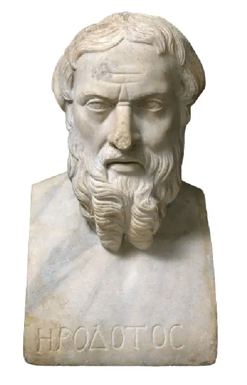
Between 550 and 539 BCE, Cyrus sent his armies east and west to expand his recently acquired realm. In 539 BCE, he turned his attention to the Neo-Babylonian Empire, defeating its armies and marching into Babylon. His Persian Empire now incorporated the territories controlled by Babylonia, including Mesopotamia, Syria, Phoenicia, and Judah, and had become the largest empire to have existed in the Near East to that point. Organizing and administering this massive domain required the use of governors, whom Cyrus generally selected from local areas, a prudent move in a world where rebellions were common.
Link to Learning
Cyrus the Great left a record of his conquest of Babylon inscribed on a clay spool about eight inches long. This artifact, now called the Cyrus Cylinder, was created in 539 BCE and promptly buried in the foundation of the city wall, to remain there until its discovery in 1879. Explore this link to the British Museum website to see a high-resolution image of the Cyrus Cylinder and a translation of its inscriptions.
Cyrus died in in battle in 530 BCE, leaving the throne and empire to his son Cambyses II. The first task for Cambyses was to continue preparing for the invasion of Egypt his father had planned. A large fleet was built in the Mediterranean and a massive land force assembled for crossing the Sinai. The invasion began in 525 BCE. The defending Egyptians were soon overwhelmed, and the pharaoh retreated up the Nile but was captured. Having now added Egypt to his already large empire, Cambyses took on the role of pharaoh, adopting the proper titles and caring for the Egyptian religious institutions. This practice of respecting local traditions was a common feature of Persian expansion and helped to win support in newly acquired areas.
Under Cambyses II, the Persian Empire stretched from the edges of India to the shores of the Aral Sea, the Aegean coast of Anatolia, and the Nile River and included everything in between. Then, just as Cambyses was reaching the height of his power, a Persian revolt broke out in 522 BCE in support of his brother Bardiya. On his way to put down the rebellion, Cambyses II died, leaving the future of the empire uncertain but allowing for the rise of possibly Persia’s most famous and powerful leader, Darius I.
Darius I and the Reorganization of the Empire¶
The events surrounding the rebellion of Cambyses II’s brother Bardiya are unclear because a handful of different accounts survive. According to Herodotus, Cambyses ordered one of his trusted advisers to secretly murder Bardiya. Since no one knew Bardiya was dead, an impostor pretending to be him launched a rebellion against Cambyses, though after several months the false Bardiya was killed in a palace coup at the hands of Darius, an army officer who claimed descent from the royal house. Afterward, since neither Cambyses nor Bardiya had sons, Darius made himself king. Other accounts differ in some ways, and some scholars have speculated that Darius invented the story about a false Bardiya in order to legitimize his own coup against the real Bardiya and take the throne.
We may never know exactly what happened, but Darius was indeed able to grasp control of the Persian Empire in 522 BCE. However, it took more than a year for him to put down the ensuing rebellions, some possibly instigated by those who refused to recognize the legitimacy of his claim to the throne. Once these had been quelled, Darius commissioned an enormous relief inscription to be made on the cliff face of Mount Behistun. It shows a dominating figure of himself facing a number of bound former rebels, accompanied by lengthy descriptions of the rebellion and, in three different languages, Darius’s version of the events that led to his rise to power (Figure 4.29). To further strengthen his claim on the throne, Darius integrated himself deeply into the royal line through a number of marriages, to the daughters of Cyrus II, the widow of Cambyses II, and two of Cambyses’s sisters.
![A picture of a wall carving is shown. It is worn, chipped, pieces are missing, and cracks are visible in many places. Across the lower portion, two men are shown on the left wearing long robes, holding a spear and a bow, with long hair and long beards. They face to the right. In front of them stands a larger man in a long robe facing to the right, crown on his head, with long hair and a long beard. He is holding his right hand up, holds a bow is his left hand, and his right foot is resting atop a body lying on the ground facing him. Nine shorter figures are shown to the right standing in a line facing left with their hands behind their backs and ropes connecting their necks. They wear a variety of shirts, robes, and cloths around their waists. All have beards and one man at the end wears a tall pointed hat. A figure is shown floating above in a long ruffled robe inside a circle with some decorative lines on the sides. On the wall above the figures there are columns of worn out writing as well as across the bottom under the figures.](img/osx-worldhist-a04-03-behistun.webp)
Darius now set about reorganizing the empire, carving it into twenty different governing districts called satrapies (Figure 4.30). Each satrapy was administered by a royal governor called a satrap, usually a trusted Persian or Median noble. Satraps answered directly to the king, had their own courts, wielded great power, and possessed vast lands within the satrapy. They often ruled from the large cities of the regions and were responsible for ensuring that their satrapy remained pacified and submitted its allotted taxes, though there were also local rulers within the region who managed affairs related to specific ethnic or religious groups. The only area not made into a satrapy was the Persian heartland, which was governed directly by the king.
![A map of the Middle East is shown with Greece and Turkey in the top left corner and the northeast corner of Africa at the bottom left. The Black Sea, the Caspian Sea, and the Aral Sea are shown in the north, the Mediterranean Sea is shown in the west, and the Red Sea, the Persian Gulf, and the Arabian Sea are shown in the south. The middle of the map is highlighted yellow. Throughout the map, in the highlighted yellow, regions are labeled. These areas are, from west to east: Macedon, Thrace, Mysia, Lydia, Caria, Paphlagonia, Phrygia, Cappadocia, Cilicia, Armenia, Caspians, Mesopotamia, Syria, Libya, Egypt, Babylonia, Susiana, Persis, Chorasmia, Sakas, Sogdiana, Parthia, Aria, Bactria, Gandhara, Sagartia, Arachosia, India, Carmania, Drangiana, Pactyans, Utians, Paricanians, Gedrosia, Maka, and Magan. Major population centers are labeled with a “ ° ” which include: Damascus, Thebes, and Babylon. “Population centers” are represented with a “ • “ and include: Aigai, Pella, Eion, Doriscus, Odessos, Byzantion, Dascylium, Sestos, Sardis, Mylasa, Rhodos, Xanthos, Herakleia, Ikonion, Sinope, Mazaca, Tarsos, Dioscurias, Issus, Thapsacus, Sidon, Tyre, Jerusalem, Pelusium, Sais, Memphis, Cyrene, Barca, Ammonium, Hermopolis, Tayma, Opis, Uruk, Gerrha, Tushpa, Arbela, Ganzak, Ecbatana, Susa, Cyropolis, Maracanda, Merv, Bactra, Hecalompylos, Rhages, Anshan, Pasargadee, Persepolis, Farah, Arachoti, Pushkalavati, Taxils, and Sindomana. The legend indicates that “Capital labels denoted with underline.” These include: Babylon, Ecbatana, Susa, Pasargadee, and Persepolis. “Divisions of the Achaemenid Empire according to Herodolus” are denoted with roman numerals from I to XX throughout the map, starting with I in the west and ending with XX in the east. Red striped lines are used to denote “Unruly territories with limited Persian authority.” This small circular area is located in southern Turkey, south of the city of Ikonion and north of Xanthos. A red dashed line is used to indicate the “Royal road of Darius the Great.” This line begins in the city of Sardis in western Turkey and heads northeast above the city of Mazaca, then heads southeast to the city of Arbela and then ends in the city of Susa.](img/osx-worldhist-a04-03-m-satrap.webp)
Darius I and later kings had a number of tools at their disposal to keep the powerful satraps in line. For example, they frequently sent royal officials, known as the “eyes and ears of the great king,” to arrive unannounced and conduct audits, compiling detailed reports about how the satrapies were being governed that were sent directly to the king for review. If the reports were negative, the satraps could expect either removal or even execution at the hands of the region’s military garrison. These garrisons were used by the satraps to enforce the laws and maintain order, but they ultimately answered to the king and could discipline the satraps when necessary.
Communication between the satraps and the king was carried out through letters dictated to scribes and transmitted along royal roads. These roads constituted an impressive communication system that linked the many key cities of the empire with the Persian heartland and its cities, like Susa, Persepolis, and Pasargadae. While it was not new—the Neo-Assyrian Empire had its own network of roads that the Persians adopted and improved—it was a valuable tool for administering the large and complicated empire. Along the many royal roads of the empire were inns, resting places, and waystations with stables for horses. Safety was ensured by the troops stationed along the way, especially at key and vulnerable points. To move letters along the roads, a member of the army of mounted royal messengers would travel the roughly twenty miles to the first station, change horses, and continue to the next station. In this way, communication could move roughly two hundred miles in a single day.
Link to the Past: Persia and the U.S. Postal Service
The Persian Empire required a sophisticated communications network to move messages across its vast territory, so it relied on speedy couriers who traveled roads first developed by the Assyrians and then improved. The ancient Greek historian Herodotus commented on Persian communications in his famous Histories:
“There is nothing that travels faster, and yet is mortal, than these couriers; the Persians invented this system, which works as follows. It is said that there are as many horses and men posted at intervals as there are days required for the entire journey, so that one horse and one man are assigned to each day. And neither snow nor rain nor heat nor dark of night keeps them from completing their appointed course as swiftly as possible. The first courier passes on the instructions to the second, the second to the third, and from there they are transmitted from one to another all the way through, just as the torchbearing relay is celebrated by the Hellenes in honor of Hephaistos. The Persians call this horse-posting system the angareion. —Herodotus, Histories”
Herodotus was not the only ancient author to describe the Persian courier system. The biblical Old Testament Book of Esther notes that not just horses were used:
“And he wrote in the king Ahasuerus’ name, and sealed it with the king's ring, and sent letters by posts on horseback, and riders on mules, camels, and young dromedaries. —Esther 8:10 (KJV)”
Even today, many still marvel at the efficiency of the Persian courier system. When the chief architect for the Eighth Avenue post office in New York City came across Herodotus’s description, he thought it perfect for a large inscription on the new building (Figure 4.31). His paraphrase of Herodotus is still visible there. Popularly thought of as the U.S. Postal Service’s unofficial motto, it reads as follows: “Neither snow nor rain nor heat nor gloom of night stays these couriers from the swift completion of their appointed rounds.”
![A black and white picture of the corner of a large stone building is shown. Tall columns decorated at the top line the outside of the building on the two sides shown. Rectangular windows line the top of the building and the corner is bricked with an inscription over the colonnade on both sides of the corner. An arched doorway is shown on the left side with stairs leading up to it from the sidewalk. A recessed arched alcove is seen on the other side of the corner. Stairs run the length of the building on the right side. Lampposts line the street on both sides and a road is seen in the forefront on both sides of the building. Other buildings can be seen in the background and a lone figure stands at the corner in a long black coat and hat. Some wheels and piles of dirt can be seen on the right side of the building in front of the stairs.](img/osx-worldhist-a04-03-postoffice.webp)
- What purposes might the Persian courier system have served? How might the empire have functioned in the absence or breakdown of such a system?
- Why might the chief architect for the Eighth Avenue post office in New York City have selected Herodotus’ description?
Building projects were another important expression of Darius’s power and authority. During his reign, he undertook the construction of elaborate palaces at Susa, Persepolis, and Pasargadae (Figure 4.32). These were constructed and decorated by skilled workers from many different locations and reflected artistic influences from around the empire, among them fluted columns designed by Greek stonemasons, Assyrian reliefs carved by Mesopotamians, and a variety of other features of Egyptian, Lydian, Babylonian, Elamite, and Median origin. The many workers—men, women, and children—who built these palaces migrated to the construction sites and often lived in nearby villages or encampments.
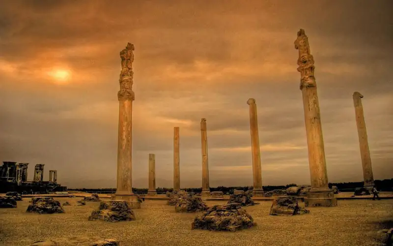
Link to Learning
Explore a reconstruction of the palace complex of Persepolis as it may have appeared to a visitor in ancient Persia via the Getty Museum’s Persepolis Reimagined interactive exhibit.
Major infrastructure projects were also a feature of Darius’s reign. For example, he ordered the construction of a long canal that would have allowed ships to pass from the Red Sea into Egypt’s Nile River and thus to the Mediterranean. It is unclear whether he actually completed it. It seems unlikely, though Herodotus insists he did. Whatever the case, that Darius attempted this massive undertaking is a testament to the power and resources the kings of Persia had at their fingertips. Other infrastructure projects included the expansion and rebuilding of the many roads that crisscrossed the empire, as well as the construction of a number of qanats (Figure 4.33). These were long, underground tunnels used for carrying fresh water over many kilometers, usually for irrigation, and represented a major improvement over earlier technologies. They likely had been used before the Achaemenids, but their construction expanded with the rise of Persian power.
![A drawing of a slice of a well is shown. At the bottom left corner is a black area labeled “Bedrock.” Above it is ombre brown ground going from dark on the bottom to lighter at the top labeled “Alluvium.” A dashed and dotted white line runs from the middle left of the drawing to the bottom right and is labeled “Water Table.” In the middle right there is a thin slice of dark brown labeled “Irrigated Land.” A thin blue line runs the length of the drawing horizontally. Above the blue line on the left is a brown sloped and paneled brown wall that ends at the right with a green thin expanse that then goes to the end of the drawing. At the top left a black arrow points down to the tallest part of the sloped wall and reads “Mother Well - The main water source for the qanat.” Next to that a black arrow points to a section of the sloped wall which is slightly lower and a caption reads “Access Shaft - Permits access to the qanat channel for construction and maintenance.” To the right, a long black arrow points to the lower portion of the sloped wall and a caption reads “Qanat Channel - The qanat’s water-carrying channel.” A black arrow points to the end of the sloped wall where it meets the green coloring and the caption reads “Outlet.” A black arrow points down to the green area next to the sloped wall and a caption reads “Distribution - A network of dams, gates, and channels is used to distribute the water.”](img/osx-worldhist-a04-03-qanat.webp)
Persian Culture and Daily Life¶
The social order of the Persian Empire included a number of hierarchically organized groups. At the bottom were the enslaved. While the Persians did not have a long history of using slavery before becoming a major power, it was common in the regions they conquered. Over time, the Persian nobility adapted to the practice and used enslaved people to work their land.
Next in the hierarchy were the free peasants, who generally worked the land and lived in the villages of the empire. On the next level were the various kinds of artisans, and higher still were the educated classes of scribes, imperial recordkeepers, and important merchants. And higher than all of these was the ruling order, including priests, nobles, and warriors (Figure 4.34).
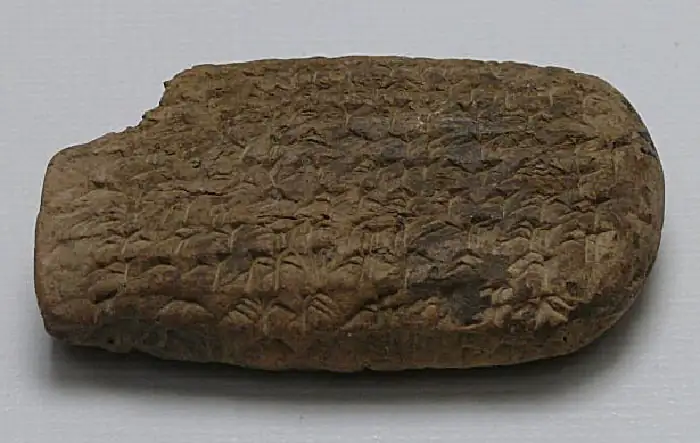
The Persian king occupied a place far above and removed from these groups. As the earthly representative of the god Ahura Mazda, he expected complete submission from everyone in the empire. Those in his presence had to position themselves on the ground to show his superiority over them. Servants who came near had to cover their mouths so as not to breathe on him. His power was absolute, though he was restrained by custom and the advice of leading nobles. One of the most important of these nobles was the “Commander of a Thousand,” who managed the large court, served as a gatekeeper to any audience with the king, and oversaw the king’s personal protection service. As was the case in the Assyrian Empire, kings were not necessarily eldest sons. Rather, the current king could select his heir and frequently chose a younger son for any number of reasons.
The Persian king and his court seem not to have remained in one centralized capital. Rather, they moved periodically between the cities and regions of Babylon, Susa, Rhagae, Parthia, Ecbatana, Persepolis, and possibly others. One motive was a desire to avoid extreme weather during certain seasons, but there were also political considerations. For example, by moving across the countryside, the king made himself visible not only to important individuals in the cities but also to the many peasants in the villages that dotted the landscape. Thus, he allowed them opportunities to present him with petitions or seek his guidance.
Moving the court in this way was no easy feat, however. It required the efforts of thousands of people including officials, soldiers, religious leaders, wives, other women, and servants of all types, and the transport of horses, chariots, religious objects, treasure, and military equipment. In many ways, it was as though the state itself migrated with the seasons. The arrival of this migrating state in any major location was met with elaborate public ceremonies of greeting and welcome. Some contemporary descriptions detail how flowers and incense were laid along the city roads where the king moved. His dramatic entry was followed by the proper sacrifices to the local gods and an opportunity for the people to bring gifts to the king, such as exotic animals, jewels, precious metals, food, and wine. It was considered a great honor to present the king with a gift, and the gift-giving ceremonies served to strengthen the king’s relationship with his subjects.
The vast army of Persia had its own ceremonies and customs. Herodotus records that it was made up of a great number of subject peoples from around the empire, all with their own colorful uniforms. Military training began at a very young age and included lessons in archery, horseback combat, and hand-to-hand combat. The most talented of the infantrymen in the Persian army might hope to rise to the ranks of the Immortals, an elite, heavy-infantry combat force that served both in war and in the king’s personal guard. The larger army was made up of various units of infantry, archers, and cavalry. The largest unit was the corps, made up of ten thousand men. Each corps had a commanding officer who answered to the supreme commander. In battle, the archers would rapidly fire their arrows into the enemy as the cavalry and infantry advanced in their respective formations. Occasionally, when rebellions were put down or new territories added, the Persians deported the conquered populations elsewhere within the empire.
Because most records from the Persian Empire focus on kings, wars, the military, and high-level officials and bureaucrats, we know little about commoners. But we know that most ordinary Persians had diets of bread or mash made of barley, supplemented by figs, dates, plums, apples, almonds, and other fruits and nuts. Much more rarely, meals might also include goat, mutton, or poultry. Besides the military, the empire supported a host of other necessary occupations, such as sentinels, messengers, various types of attendants, architects, merchants, and numerous types of lower professions. The many agricultural workers grew traditional crops of the Near East, like wheat and barley, in addition to rice (brought from India) and alfalfa (for horse feed). Merchants in the Persian Empire benefited greatly from the stability created by the government and the extensive network of crisscrossing roads that connected the far-flung regions. Although long-distance trade was prohibitively expensive for most things except luxury goods, trade across short distances was apparently common.
The religion of the Persians was a tradition we describe today as Zoroastrianism. Its name comes from Zoroaster, the Greek pronunciation of the name of its founder, Zarathustra. Scholars today believe that Zoroaster likely lived at some point between 1400 and 900 BCE and was almost certainly a Persian priest, prophet, or both. His followers likely practiced a polytheistic religion similar in many ways to the Vedic traditions held by Indo-European speakers who migrated into India. Among Zoroastrians’ many gods were both powerful heavenly deities and more terrestrial nature gods. Ceremonies included various rituals similar to those of other polytheistic religions, such as the sacrifice of animals on outdoor altars.
Zoroaster appears to have emphasized the perpetual conflict between the forces of justice and those of wickedness. Over time, he developed supernatural personifications of these forces: Ahura Mazda was the lord of wisdom and the force of good (Figure 4.35), and Angra Mainu was the destructive spirit and the force of evil. Each was supported by lesser supernatural beings. On the side of Ahura Mazda were the ahuras who worked to bring good to the world, and on the side of Angra Mainu were the daevas who served the interests of evil.
![A picture of a square stone carving is shown. At the top is a man’s face facing left with long curly hair and a long curly beard. His right hand is pointed up and his left hand holds a round circular object. He wears long robes that are scalloped below the waist. A large circle is shown below his waist that leads to two large bird legs sticking out at the sides. Large feathered wings spread out from his waist. The stone is cracked and marbled gray and brown. A lip is seen at the top of the stone and a shadow is shown below the stone lip as well as on the left bottom.](img/osx-worldhist-a04-03-ahuramazda.webp)
The Persian followers of Zoroastrianism believed Ahura Mazda had created the world as an entirely good place. However, Angra Mainu was dedicated to destroying this perfection with evil, so the two forces fought for the supremacy of good or evil on Earth. The world the Persians saw around them was the product of their pitched battle. However, the fight would not last forever. At some appointed time in the future, Ahura Mazda would overcome the forces of Angra Mainu, and the followers of evil would face judgment and punishment for their crimes. It was up to humans to decide for themselves what path to follow. At the final judgment, the dead would be resurrected and made to walk through a river of fire. Those consumed by the fire were unworthy and would be condemned to torment in hell, while those who survived would live forever in a paradise with no evil.
While Zoroaster’s beliefs were not readily accepted by his own people, he found protection and a following among others, and in the centuries after his death, his ideas spread and changed. For example, the Medes incorporated their own priestly class into the Zoroastrian traditions. The Achaemenids borrowed artistic traditions from the Mesopotamians to depict Ahura Mazda in the same way they styled their important gods. Later, Judeans within the Persian Empire, who were from the Canaanite kingdom of Judah and followers of Judaism, incorporated many Zoroastrian ideas into their own religious traditions. These ideas went on to influence the religions of Christianity and Islam.
Link to the Past: Zoroastrianism, Judaism, and Christianity
Zoroastrianism, Judaism, and Christianity may have emerged in the ancient world, but they are all still practiced today. And while in modern times these religions appear quite different, they share important similarities.
Consider these modern similarities between Zoroastrianism and Christianity. Both accept the idea of a powerful god as the source of all good, the existence of evil and deceptive forces that plague the world, a final judgment that occurs when the forces of evil have been vanquished forever, and a pleasant afterlife for those who follow the path of righteousness. These similarities are not the product of random accident. Rather, the connections between Zoroastrianism and Christianity date to developments within Judaism in the centuries before the birth of Christ.
It was likely that when the Judeans were members of the Persian Empire, they became acquainted with some of the ideas of Zoroastrianism, and these ideas influenced the way they understood their own monotheistic religion. The notion that a force of evil was responsible for the many problems in the world may have been a comforting thought for those who wanted to believe that God was both all-powerful and thoroughly benevolent. The concept of a final judgment was also appealing to Judeans, who held that they were not only God’s chosen people but also persecuted by the forces of evil. While these ideas begin to appear in Judean writings only in the centuries after the fall of Persia, the seeds had likely been planted much earlier through a growing familiarity with the tenets of Zoroastrianism. In the second century BCE, many followers of Judaism had come to accept the idea of a final judgment. It was this form of Judaism that ultimately influenced the fundamental tenets of Christianity.
- What do the connections between Zoroastrianism, Judaism, and Christianity suggest about the way religions borrow from each other? Can you think of other examples?
- How might modern Christianity be different had Judaism not been influenced by Zoroastrianism?
While the religion of the Persians was Zoroastrianism, the empire included people of different religions, including Armenians, Nubians, Libyans, Phoenicians, Egyptians, Babylonians, Ionian Greeks, Bactrians, Judeans, and many others. Indeed, it was the Persian king Cyrus II who permitted the Judeans exiled in Babylon to return to Judah and rebuild their temple. The empire expected loyalty and the payment of tribute, but its kings were not interested in transforming their diverse peoples into Persians. Instead, they developed an imperial system that supported the maintenance of a multiethnic, multilingual, and multireligious empire.
4.4 The Hebrews¶
Learning Objectives
By the end of this section, you will be able to:
- Discuss the history of the Hebrews in the context of the development of the Near East
- Explain how the Hebrew faith differed from others in the same region and time period
The Hebrews, a Semitic-speaking Canaanite people known for their monotheistic religion of Judaism or the Jewish religion, have preserved a history of their people that claims very ancient origins and includes descriptions of early leaders, kings, religious traditions, prophets, and numerous divine interventions. That history, often called the Tanakh or Hebrew Bible in the Jewish tradition and the Old Testament in the Christian tradition, has survived for many centuries and influenced the emergence of the two other major monotheistic faiths, Christianity and Islam. While fundamentalist Christians and Orthodox Jews hold that the Bible is both divinely inspired and inerrant, historians must scrutinize the text and the rich history it records. This study and the careful work of archaeologists in the Near East have revealed a number of problems with accepting as infallible the story as recorded in the Hebrew Bible, but research has also opened our eyes to a history that is perhaps even more interesting than the account traditionally preserved.
The History of the Hebrews¶
The history of the Hebrews recorded in the Bible starts with the beginning of time and the creation of the first man, Adam. However, it is with the life of the patriarch Abraham that we begin to see the emergence of the Hebrews as a distinct group. Abraham, we are told, descended from Noah a thousand years before, and Noah himself descended from Adam a thousand years before that. Relying on the ages and generations referenced in the Hebrew Bible, we can deduce that Abraham was born around 2150 BCE in the Mesopotamian city of Ur. At the age of seventy-five, he left this city and traveled to the land of Canaan in the eastern Mediterranean. There Abraham and his wife Sarah had their first son together, Isaac. Isaac then had a son, Jacob, and Jacob gave birth to twelve sons. From these twelve sons, the traditional Twelve Tribes of Israel descend (Figure 4.36).
![A picture of a colorful painting is shown. A man is shown wearing long orange robes with a purple sash across his waist, a white cape on his shoulders, white turban on his head, and sandals on his feet. He has a long white beard. He holds the hand of a shorter boy walking next to him. The boy is pale with reddish short hair. He is barefoot and bare chested with a blue cloth tied around his waist. Another boy is walking next to him with his arm around the first boy. He wears a red cloth hanging from his left shoulder and going around his waist. He has black hair and a small cap on his head. The bottom right of the picture shows sheep and rams walking with the people. In the back are two camels with women in long robes and white scarves on their heads riding atop the humps. Each woman has two small children with her either naked or in white cloths around their waists. In the back right is another woman on a camel in a white shirt and red scarf on her head holding one naked child in front of her. Behind the sheep and rams walk two figures, one holding on to an animals walking between them while the other has a sheep around his neck. The ground is gray and cracked and small green bushes are seen at the left of the painting. The sky behind is varying hues of purple, blue, and cream.](img/osx-worldhist-a04-04-abraham.webp)
While this chronology explains how the Hebrews found themselves in Canaan, there is little to support it. There are no archaeological sites we can reference, and the only evidence we have for Abraham, his trip from Mesopotamia, and his children, grandchildren, and great-grandchildren comes from the Hebrew Bible. This has led some to suspect that the stories of Abraham and his family may have been developed much later than the Bible suggests. And in fact, historians have traced the story of Abraham to sources written down between the tenth and sixth centuries BCE. It is possible that Abraham was a historical person and part of an ancient migration recounted for centuries in oral form, but without additional records or archaeological discoveries that attest to his existence, we cannot know for sure.
The Hebrew Bible notes that Joseph, one of Abraham’s twelve great-grandsons, ended up in Egypt. Later, around 1800 BCE based on the biblical chronology, Joseph’s family joined him, and his descendants lived there for several generations. During this long time in Egypt, the Bible explains that the descendants of Joseph experienced increasingly poor treatment, including being enslaved by the (unnamed) Egyptian pharaoh and put to work on building projects in the Nile delta (Figure 4.37). Later, the pharaoh decided to kill all the male Hebrew children, but one was saved from the slaughter by being hidden in a basket to float down the Nile. He was discovered by the pharaoh’s daughter, who named him Moses and raised him among the Egyptian royalty as her own.
![A picture of a painting is shown. In the middle there is a wooden cart with a large golden lion statue on top. Hordes of people are seen struggling to pull and push the cart toward the right on sandy colored ground, wearing various cloths and barefoot. Some are naked. Atop the cart are two dark skinned men, one with a whip in the air while the other holds a white umbrella over the man with the whip. In front of the cart a man is shown on the ground with a man and woman bent over him. Another smaller cart is shown to the right with a large coil of brown rope with a person sitting atop the rope pulled by three men. Behind the statue is a person in long robes sitting in a portable throne being carried by four people in white cloths at their waists. Behind this scene are white and off-white buildings of various shapes and sizes with colorful scenes drawn on the walls. There is a tall brown obelisk in front of one of the buildings on the right with etchings from top to bottom. Next to the obelisk on either side of a large rectangular doorway are two tall black statues of figures wearing elaborate headdresses. In the far left background pyramids can be seen as well as sandy mountains.](img/osx-worldhist-a04-04-israelegyp.webp)
The Bible continues the story by explaining that the adult Moses discovered who he actually was and demanded that the pharaoh release the Hebrews and allow them to return to Canaan. After experiencing a number of divine punishments issued by the Hebrew god, the pharaoh reluctantly agreed. The Hebrews’ flight from Egypt included a protracted trek across the Sinai desert and into Canaan, during which they agreed to worship only the single god Yahweh and obey his laws. This period of their history is often called the Exodus, because it records their mass migration out of Egypt and eventually to Canaan. Once in Canaan, Moses’s general Joshua led several military campaigns against the inhabitants, which allowed the Hebrews to settle the land.
The details in the biblical account of the Hebrews’ life in Egypt and their exodus from that kingdom have led some scholars to associate these stories with the period of Hyksos rule. It was then, during the Second Intermediate Period, that the Canaanites flooded into the Nile delta and took control, and it may be that the story of Joseph and his family entering Egypt preserves a memory of that process. The exact time of the exodus from Egypt has been difficult for historians to determine for a number of reasons, not least of which is the fact that the Bible does not name the Egyptian pharaohs of the Exodus period.
Yet some features of the biblical account indicate there was in fact some type of exodus. For example, Moses’s name is Egyptian and not Hebrew, suggesting he came from Egypt. The Bible also names the two midwives who traveled with the group, leading some scholars to conclude there was some oral tradition about a very small group that may have crossed the Sinai into Canaan, though not the very large group described in the Bible. As for the story of the conquests of Joshua, the archaeological record simply does not support this. Even at the site of Jericho, extensive archaeological work has been unable to prove that the city was destroyed when and in the way the Bible describes. This absence of strong evidence has led most to conclude that there likely was no conquest, and that there was already a population of Hebrews in Canaan who were later joined by a smaller group from Egypt.
In Their Own Words: What Is in a Name?
Without archaeological or other evidence, historians have had to rely on the Hebrew Bible for clues about the Exodus. One possible hint comes from the Bible’s book of Exodus, which describes the birth of Moses, his mother’s effort to save him from slaughter, and his discovery and adoption by the pharaoh’s daughter (Figure 4.38).
![A picture of a colorful painting is shown. A woman in an elaborate lavender dress is shown sitting on a palanquin. She has long black hair with a colorful band and holds a short whip and flowers in her hands. She is being fanned with decorative white feathers by men in long white robes standing on the ground. The palanquin is shown being carried by six men in the back clad in white cloths at their waists. They are all bald. She is looking happily at a basket being carried next to her by two women in white cloths tied at their waists and decorations around their neck and head. The backet is decorated with hanging flowers and a baby with black hair lays in white blankets inside the basket. Blue flowers line the bottom forefront of the painting. Water lays behind the scene and in the far background a sandy expanse can be seen littered with people, buildings, and trees.](img/osx-worldhist-a04-04-moses.webp)
“And there went a man of the house of Levi, and took to wife a daughter of Levi. And the woman conceived, and bare a son: and when she saw him that he was a goodly child, she hid him three months. And when she could no longer hide him, she took for him an ark of bulrushes, and daubed it with slime and with pitch, and put the child therein; and she laid it in the flags by the river's brink. And his sister stood afar off, to witness what would be done to him. And the daughter of Pharaoh came down to wash herself at the river; and her maidens walked along by the river's side; and when she saw the ark among the flags, she sent her maid to fetch it. And when she had opened it, she saw the child: and, behold, the babe wept. And she had compassion on him, and said, This is one of the Hebrews' children. Then said his [Moses’s] sister to Pharaoh's daughter, Shall I go and call to thee a nurse of the Hebrew women, that she may nurse the child for thee? And Pharaoh's daughter said to her, Go. And the maid went and called the child's mother. And Pharaoh's daughter said unto her, Take this child away, and nurse it for me, and I will give thee thy wages. And the woman took the child, and nursed it. And the child grew, and she brought him unto Pharaoh's daughter, and he became her son. And she called his name Moses: and she said, Because I drew him out of the water. —Exodus 2:1-10 (KJV)”
As this story explains, the pharaoh’s daughter named Moses to reflect the fact that she “drew him out of the water.” Some scholars believe this phrase is a reference to the Hebrew word mashah, meaning to “draw out,” which sounds similar to the Hebrew pronunciation of Moses, Mosheh. That explanation would have made sense to Hebrew readers of the Bible, but it does not make sense that an Egyptian princess would speak Hebrew. While this problem makes it difficult to take the story seriously as evidence, it does raise an interesting question.
Is the biblical account actually an attempt to explain a Hebrew man’s name that was not Hebrew but Egyptian? In Egyptian, Moses means “child of.” It would have been part of a larger name such as Thutmose, which means “child of [the god] Thoth.” The fact that Hebrew tradition tried to explain his Egyptian name suggests to some that Moses may have been a real person with Egyptian heritage. That, in turn, suggests there is some validity to the Exodus story itself.
- Does the scholarly interpretation of the name Moses as Egyptian in origin seem credible to you? Why or why not?
- What does this story reveal about family relationships in the period?
The biblical book of Judges describes how the Hebrews moved into the hills of Canaan and lived as members of twelve tribes. In the book of Samuel, we hear how they faced oppression from the Philistines, one of the many Sea Peoples groups. To better defend themselves against the Philistines, the Hebrews organized themselves into a kingdom they called Israel. Their first leader, Saul, became king around 1030 BCE but failed to rule properly. The second king, David, not only ruled effectively but also was able to drive back the Philistines.
The Hebrews, properly referred to as Israelites in this period because of their formation of the Kingdom of Israel, now entered a golden age in their history. David suppressed the surrounding kingdoms, made Jerusalem his capital, and established a shrine there to the Israelite god Yahweh. This more organized kingdom was then left to David’s son Solomon, who furthered the organization of Israel, made alliances with surrounding kingdoms, and embarked on numerous construction projects, the most important of which was a large temple to Yahweh in Jerusalem.
Historians call the period of these three kings—Saul, David, and Solomon—the united monarchy period. Archaeological work and extrabiblical sources support many biblical claims about the era. For example, there was a threat to the Hebrews from the Philistines, who were likely one of the many groups of migrants moving, often violently, around the eastern Mediterranean during the period of the Late Bronze Age Collapse. We have Egyptian and other records of these migrants, some specifically mentioning the Philistines by name. It seems likely that the founding of Israel was a response to this threat.
As for the existence of Saul and David, things are less clear. The Bible provides several conflicting accounts of how these two men became king. For example, Saul is made king when he is found hiding among some baggage, but also after leading troops in a dramatic rescue. Similar confusion surrounds David, though it seems clear he became an enemy of Saul at some point and was able to make himself king. Despite these contradictions, there is one piece of archaeological evidence for the existence of King David. The Tel Dan stele discovered in the Golan Heights in the 1990s makes reference to the “house of David,” meaning the kingdom of David (Figure 4.39). However, no similar archaeological evidence has been unearthed for David’s son Solomon. Indeed, evidence of Solomon’s most famous achievement, the building of the first temple in Jerusalem, has yet to be discovered. However, we have strong archaeological evidence for some of his other public works projects, such as the three-thousand-year-old gates discovered at Gezer, Hazor, and Megiddo.
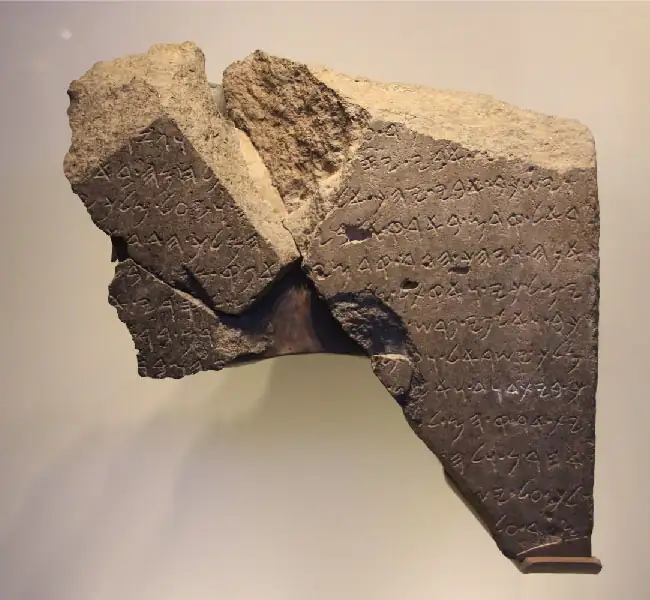
After the death of Solomon, the period of the united monarchy came to an end, and Israel split into two kingdoms, Israel in the north and Judah in the south. This inaugurated the period of the divided monarchy (Figure 4.40). Jerusalem remained the capital of Judah, while Samaria was the capital of Israel. The northern kingdom was the larger and wealthier of the two and exerted influence over and sometimes warred with Judah. The biblical account often puts the kings of the northern kingdom in a negative light, noting that they abused their subjects and incorporated elements of foreign religious traditions in their worship of Yahweh.
![On the left, a map of the Middle East is shown. A box includes Cyprus, the western half of Syria, Lebanon, Israel, Jordan, and the northeastern corner of Egypt. A second map shows this region larger. Along the Mediterranean Sea's eastern coast, a section of land is highlighted orange and labeled Kingdom of Israel. Inside this region, there is a star indicating Samaria. Other cities include Shechem, Jerash, Beit El, Jericho, and Jaffa. Above this are, not highlighted are the cities of Damascus and then Byblos and Acre along the coast. South of the orange highlighted region is a smaller region highlighed green and labeled Kingdom of Judah. Inside this region, a star indicates Jerusalem. Other cities in this region include Lachish, Hebron, and Beersheba.](img/osx-worldhist-a04-04-m-israelj.webp)
With the rise of the Neo-Assyrian Empire and its expansion into Canaan, Israel and Judah entered a new era under foreign domination within the Assyrian-controlled Near East. Anti-Assyrian sentiment in both kingdoms and the Neo-Assyrians’ desire to control the eastern Mediterranean eventually led to multiple Assyrian attacks on Israel. The most devastating occurred in 722 BCE, when thousands of Israelites were deported to other parts of the empire, as was the Assyrians’ custom.
Prophets in Judah interpreted the destruction of Israel as punishment for its having veered from the covenant with Yahweh. They called for religious reforms in Judah in order to avoid a similar fate. While Judah was incorporated into the Neo-Assyrian Empire, it avoided the destruction experienced by Israel. However, the defeat of Assyria by the Neo-Babylonians brought new challenges to Judah. Resistance to Babylon led to punishments and forced deportations in 597 BCE, and finally to the destruction of Jerusalem and its temple in 586 BCE.
The many Judeans deported to Babylon after the fall of Jerusalem were settled in Mesopotamia and expected to help repopulate areas that had been devastated by wars. Many assimilated into Babylonian culture and became largely indistinguishable from other Mesopotamians. Some, however, retained their Judean culture and religious beliefs. For these Judeans, the Babylonian exile, as it was called, was a time of cultural and religious revival. They edited various earlier Hebrew writings and combined them into a larger work, thus giving shape to the core of the Hebrew Bible. Finally, with the rise of the Persian Empire and its conquest of Babylonia, the Persian king Cyrus the Great permitted the unassimilated Judeans to return to Judah. They went in two major waves over the next few decades and began a process of reconstruction that eventually included the rebuilding of Yahweh’s temple at Jerusalem.
The Culture of the Hebrews¶
The most salient feature of Hebrew culture during this period was its then-unusual monotheism. The Bible suggests this tradition began with Abraham, who was said to have entered into a covenant with Yahweh as far back as 2100 BCE. With the emergence of Moses in the Bible, Hebrew monotheism really began to take shape. As the Bible explains, during the exodus from Egypt, Moses was given the laws directly from Yahweh, including the command that only Yahweh be worshipped. This account suggests that pure monotheism was commonly practiced by the Hebrews from that time forward. Yet closer inspection of the biblical stories reveals a much more complicated and gradual process toward monotheism.
For example, the first of the commandments given to Moses by Yahweh demands that the Hebrews “have no other gods before me.” This language implies that there are in fact other gods, but those gods are not to be worshipped. In other places in the Bible, God is referred to as plural or occasionally as part of an assembly of gods. This textual evidence likely preserves small elements of the earlier Canaanite polytheistic religious traditions. These include the veneration of El, the head of the pantheon and often associated with Yahweh, and of Yahweh’s consort Asherah, the storm god Baal, the fertility goddess Astarte, and many others. Archaeologists’ discoveries of temples and figurines representing these gods attest to the fact that they were worshipped in some form well into the eighth century BCE.
Many portions of the Bible describe how the Hebrews frequently fell away from Yahweh and back into their polytheistic traditions. This backsliding is usually condemned in the Bible and occasionally results in efforts by biblical heroes to restore Moses’s covenant with God. King Hezekiah of Judah (727–697 BCE), for example, conducted a cleansing campaign against unauthorized worship around his kingdom. He removed local shrines, destroyed sacred monuments, and smashed cult objects. His son, King Manasseh, however, restored some of these cultic practices and shrines. Setting aside the bias of the Bible’s writers, Manasseh may have been attempting to rescue long-standing religious traditions that had been under assault by his reform-minded father. However, as early as the mid-seventh century BCE, the religious reformers who promoted the centralized worship of Yahweh and obedience to the laws of Moses had clearly gained the upper hand. Their interpretation of Hebrew history and religion was then on the rise.
The backsliding theme of the Hebrew Bible was partly a way for its writers to account for the vestiges of Canaanite religious practices that did not fit neatly with their view of the Hebrews as having been monotheistic from the time of Moses. The abandonment of Yahweh accounted for the disasters that befell the Hebrews in Israel and Judah, especially the destruction of the temple and forced deportation to Babylon. Neo-Assyria and Neo-Babylonia were merely tools, the biblical writers and the prophets they record attest, used by Yahweh to compel the Hebrews to follow the correct path or face punishment. This version of Israelite history was kindled and strengthened during the Babylonian exile, when the core portion of the Hebrew Bible was being edited and assembled.
By the time the Judeans were allowed to return to Jerusalem and rebuild their temple, the basic framework of what we understand today as Judaism had emerged and been largely accepted. The Jews (or people from Judah) were expected to worship only Yahweh, live moral lives consistent with his dictates, and closely follow the laws of Moses. For example, they were prohibited from murdering, stealing, and committing adultery. They were barred from consuming specific foods such as pork, shellfish, insects, and meat that had been mixed with dairy. Food had to be properly prepared, which included ritual slaughter for animals. Jewish people were also prohibited from working on the seventh day of the week and were compelled to treat wives with respect and give to charity, among many other acts. And of course there were important rules about the worship of Yahweh, including loving him, fearing him, emulating him, and not profaning his name.
Since the Hebrews could trace their origins back to agricultural clans, a number of the laws of Moses dealt with agricultural issues, like prohibitions against eating ripe grains from the harvest before they are made into an offering. The festival of Sukkot, meaning “huts,” was a harvest festival when Jewish people were expected to erect huts, possibly as a way to remember the time when they were primarily agriculturalists. However, as the Hebrews grew in number and began living in cities and adopting urban occupations, these agricultural traditions were relegated primarily to symbolic religious practice. In cities, Jewish people found economic opportunities as craftspeople, traders, and merchants. As Jerusalem grew in the centuries after the Babylonian exile, their religion became ever more adapted to urban life.
At the center of urban life in Jerusalem was the temple, completed around 515 BCE (Figure 4.41). It included courtyards as well as an enclosed sanctuary with altars and a special location kept in total darkness, referred to as the Holy of Holies, where Yahweh was present. In the temple, the priests organized various religious festivals and performed elaborate rituals, including special sacrifices of animals supplied by worshippers seeking the favor of Yahweh.
![An aerial picture of a large white stone building is shown. The building is tall and marbled gray and white with gold trim across the top and on the roof as well as at the top of the four columns shown on the front. A large framed doorway shows golden doors. A tall white bricked wall surrounds the structure in a rectangle with windowed towers on the corners and in the middle on the long sides. A windowed wall with openings connects the towers on the sides and divides the area in half. In the lower portion the inside wall has openings and a framed opening with gold doors that lead to rounded steps and then to an open area. Buildings hug the inside of the outer walls in this area. A gold door is shown in the lower part of the white brick wall. Buildings can be seen in the background in various shapes and sizes with white, gray, and red roofs. The ground throughout the photo is white stone.](img/osx-worldhist-a04-04-sectemple.webp)
Chapter Review¶
Key Terms¶
- Babylonian exile
- the deportation of Judeans to Babylon after the fall of Jerusalem
- chattel slavery
- a form of slavery in which one person is owned by another as a piece of property
- Exodus
- the mass migration of Hebrews out of Egypt under the leadership of Moses
- Hebrew Bible
- the holy book that, according to Jewish tradition, tells the history of the Hebrew people
- Iron Age
- the period beginning around 1200 BCE when iron became the preferred material for manufacturing tools and weapons
- Ramesside kings
- the line of kings that ruled New Kingdom Egypt following the reign of Ramses I
- satrapy
- one of twenty governing districts in Persia administered by royal governors called satraps, who answered directly to the king
- vassal state
- a state or kingdom that is nominally independent in the running of its internal affairs but must submit to the demands of a dominating empire and usually provide tribute to it
- Zoroastrianism
- the religion of the ancient Persians, named for its founder Zarathustra, pronounced Zoroaster in Greek
Summary¶
4.1 From Old Babylon to the Medes¶
After the challenges to Mesopotamian civilization created by the invasions of the Amorites and Elamites, a succession of new empires emerged. In the 1700s BCE, King Hammurabi transformed Babylon from a minor city-state to the center of a vast empire. At the start of the 1500s BCE, the Hittites exploded out of Anatolia, sacking Babylon and later competing with Egypt for supremacy in the eastern Mediterranean. During the Iron Age that followed, the Near East underwent an even deeper transformation as the Neo-Assyrians created the first empire to control both Mesopotamia and Egypt. Then, at the end of the seventh century BCE, a resurgent Babylonia allied with the Median Empire to destroy the Neo-Assyrian Empire and carve up the spoils.
Each empire controlled large territories that were home to diverse peoples, religions, and daily practices, often adopted from older civilizations and shaped to suit their own needs and interests.
4.2 Egypt’s New Kingdom¶
During the Second Intermediate Period, Egyptian influence dwindled to only the region around Thebes. Semitic-speaking immigrants from Canaan called the Hyksos flowed into the Nile delta and eventually established control there, bringing improved bronze-making technology, the composite bow, and the horse-drawn, lighter-weight chariot.
The first kings of the Egyptian New Kingdom drove out the Hyksos and extended their own influence into Nubia. Pharaohs like Thutmose III led their armies into Canaan and Syria to halt rivals like the Hittite kingdom and Mitanni. The New Kingdom also saw the rise of the cult of Amun-Re in Thebes and Akhenaten’s revolutionary transformations. Akhenaten and Ramesses II built new cities as testaments to their greatness, and many others like Hatshepsut commissioned elaborate tombs, temples, and monuments. These powerful pharaohs extended their influence into Nubia, Canaan, and Syria through a number of military campaigns that also allowed Egypt to control vital trade routes to Mesopotamia. After centuries of greatness, however, the New Kingdom’s power declined, hastened by invasions, the loss of territory, and deteriorating foreign influence, until finally the kingdom fell.
4.3 The Persian Empire¶
According to Herodotus, Cyrus the Great led the Persians to overthrow the Median dynasty and then by 539 BCE to defeat the Neo-Babylonians. Cyrus’s successor Cambyses II extended Persia’s control over Egypt and assembled a vast empire that stretched from the edges of India to the Nile River. When Darius I rose to power, he reorganized the empire into twenty districts called satrapies, each with its own governor or satrap, and oversaw a number of public works projects such as elaborate palaces and qanats for carrying fresh water over many kilometers.
The kings of Persia were honored as the earthly representatives of the Persian god Ahura Mazda and commanded a large army of subject peoples from around the empire. The religion of the Persians was Zoroastrianism, which saw the world as the field of competition between the forces of good and evil and predicted a final judgment after evil had been conquered. But the empire included numerous ethnicities and followers of many religions, including the Judeans with their own unique monotheistic religious tradition.
4.4 The Hebrews¶
The history of the Hebrew people as recorded in the Hebrew Bible tracks their emergence in Canaan, their oppression in and exodus from Egypt, their construction of a united monarchy, and their many conflicts among themselves and with empires like Neo-Assyria and Neo-Babylonia. But the archaeological record and various portions of the Bible cast some doubt on a number of aspects of this general story. For example, archaeology does not support the occurrence of Joshua’s conquest of Canaan after the Exodus, though at least some of King Solomon’s building projects have been discovered in sites like Gezer, Hazor, and Megiddo. And the stories of Hebrews migrating to Egypt may preserve much older traditions related to the arrival of the Hyksos there.
The Bible also describes the monotheistic worship of Yahweh, the definitive characteristic of the Hebrews. But contrary to what the Bible suggests, this religious practice did not arise fully formed. Rather, it developed over centuries and under unique circumstances and geopolitical pressures. By the time the Persian Empire extended its domination across the Near East, the religion of Judaism as we know it today was starting to take shape. It demanded absolute obedience to Yahweh and his many laws, including specific dietary restrictions. And the worship of Yahweh was centralized in the temple at Jerusalem.
Review Questions¶
4.1 From Old Babylon to the Medes¶
1.
2.
3.
4.
5.
4.2 Egypt’s New Kingdom¶
6.
7.
8.
9.
4.3 The Persian Empire¶
10.
11.
12.
4.4 The Hebrews¶
13.
14.
15.
Check Your Understanding Questions¶
4.1 From Old Babylon to the Medes¶
16.
17.
18.
4.2 Egypt’s New Kingdom¶
19.
20.
4.3 The Persian Empire¶
21.
22.
4.4 The Hebrews¶
23.
24.
Application and Reflection Questions¶
4.1 From Old Babylon to the Medes¶
25.
26.
27.
4.2 Egypt’s New Kingdom¶
28.
29.
4.3 The Persian Empire¶
30.
31.
4.4 The Hebrews¶
32.
33.
Adapted from World History, Volume 1, to 1500 by OpenStax, licensed under CC BY 4.0. Access the original for free at openstax.org. Changes: converted to the web reading format of The Open Book Project.